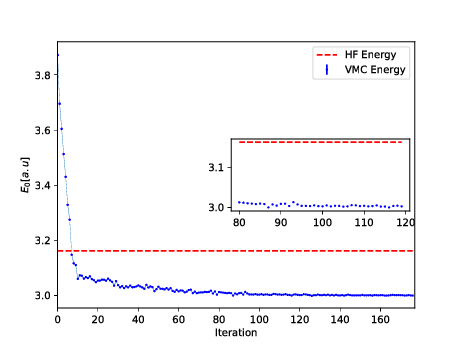

These notebooks serve the aim of linking traditional variational Monte Carlo VMC calculations methods with recent progress on solving many-particle problems using Machine Learning algorithms.
Furthermore, when linking with Machine Learning algorithms, in particular so-called Boltzmann Machines, there are interesting connections between these algorithms and so-called Shadow Wave functions (SWFs) (and references therein). The implications of the latter have been explored in various Monte Carlo calculations.
In total there are three notebooks:
In notebook 1 we gave an introduction with code examples on how to develop a professional variational Monte Carlo program. The intention behind that material was to bridge the gap between traditional Monte Carlo calculations and Machine Learning methods. In particular, as will be the case here, the provide a link between neural networks with so-called Boltzmann machines and many of the basic ingredients in a variational MC calculation. The most important ingredients we discussed in notebook 1 were
The approaches to machine learning are many, but are often split into two main categories. In supervised learning we know the answer to a problem, and let the computer deduce the logic behind it. On the other hand, unsupervised learning is a method for finding patterns and relationship in data sets without any prior knowledge of the system. Some authours also operate with a third category, namely reinforcement learning. This is a paradigm of learning inspired by behavioural psychology, where learning is achieved by trial-and-error, solely from rewards and punishment.
Another way to categorize machine learning tasks is to consider the desired output of a system. Some of the most common tasks are:
The field of artificial neural networks has a long history of development, and is closely connected with the advancement of computer science and computers in general. A model of artificial neurons was first developed by McCulloch and Pitts in 1943 to study signal processing in the brain and has later been refined by others. The general idea is to mimic neural networks in the human brain, which is composed of billions of neurons that communicate with each other by sending electrical signals. Each neuron accumulates its incoming signals, which must exceed an activation threshold to yield an output. If the threshold is not overcome, the neuron remains inactive, i.e. has zero output.
This behaviour has inspired a simple mathematical model for an artificial neuron. $$ y = f\left(\sum_{i=1}^n w_ix_i\right) = f(u) $$ Here, the output \( y \) of the neuron is the value of its activation function, which have as input a weighted sum of signals \( x_i, \dots ,x_n \) received by \( n \) other neurons. The figure here shows the simple perceptron model.
An artificial neural network (NN), is a computational model that consists of layers of connected neurons, or nodes. It is supposed to mimic a biological nervous system by letting each neuron interact with other neurons by sending signals in the form of mathematical functions between layers. A wide variety of different NNs have been developed, but most of them consist of an input layer, an output layer and eventual layers in-between, called hidden layers. All layers can contain an arbitrary number of nodes, and each connection between two nodes is associated with a weight variable.
The feed-forward neural network (FFNN) was the first and simplest type of ANNs that were devised. In this network, the information moves in only one direction: forward through the layers.
Nodes are represented by circles, while the arrows display the connections between the nodes, including the direction of information flow. Additionally, each arrow corresponds to a weight variable (figure to come). We observe that each node in a layer is connected to all nodes in the subsequent layer, making this a so-called fully-connected FFNN. The figure shows an example of an FFNN.
A different variant of FFNNs are convolutional neural networks (CNNs), which have a connectivity pattern inspired by the animal visual cortex. Individual neurons in the visual cortex only respond to stimuli from small sub-regions of the visual field, called a receptive field. This makes the neurons well-suited to exploit the strong spatially local correlation present in natural images. The response of each neuron can be approximated mathematically as a convolution operation. (figure to come)
Convolutional neural networks emulate the behaviour of neurons in the visual cortex by enforcing a local connectivity pattern between nodes of adjacent layers: Each node in a convolutional layer is connected only to a subset of the nodes in the previous layer, in contrast to the fully-connected FFNN. Often, CNNs consist of several convolutional layers that learn local features of the input, with a fully-connected layer at the end, which gathers all the local data and produces the outputs. They have wide applications in image and video recognition.
So far we have only mentioned ANNs where information flows in one direction: forward. Recurrent neural networks on the other hand, have connections between nodes that form directed cycles. This creates a form of internal memory which are able to capture information on what has been calculated before; the output is dependent on the previous computations. Recurrent NNs make use of sequential information by performing the same task for every element in a sequence, where each element depends on previous elements. An example of such information is sentences, making recurrent NNs especially well-suited for handwriting and speech recognition.
There are many other kinds of ANNs that have been developed. One type that is specifically designed for interpolation in multidimensional space is the radial basis function (RBF) network. RBFs are typically made up of three layers: an input layer, a hidden layer with non-linear radial symmetric activation functions and a linear output layer (''linear'' here means that each node in the output layer has a linear activation function). The layers are normally fully-connected and there are no cycles, thus RBFs can be viewed as a type of fully-connected FFNN. They are however usually treated as a separate type of NN due the unusual activation functions.
One uses often so-called fully-connected feed-forward neural networks with three or more layers (an input layer, one or more hidden layers and an output layer) consisting of neurons that have non-linear activation functions.
Such networks are often called multilayer perceptrons (MLPs).
According to the Universal approximation theorem, a feed-forward neural network with just a single hidden layer containing a finite number of neurons/nodes can approximate a continuous multidimensional function to arbitrary accuracy, assuming the activation function for the hidden layer is a non-constant, bounded and monotonically-increasing continuous function.
Note that the requirements on the activation function only applies to the hidden layer, the output nodes are always assumed to be linear, so as to not restrict the range of output values.
The output \( y \) is produced via the activation function \( f \) $$ y = f\left(\sum_{i=1}^n w_ix_i + b_i\right) = f(z), $$ This function receives \( x_i \) as inputs. Here the activation \( z=(\sum_{i=1}^n w_ix_i+b_i) \). In an FFNN of such neurons, the inputs \( x_i \) are the outputs of the neurons in the preceding layer. Furthermore, an MLP is fully-connected, which means that each neuron receives a weighted sum of the outputs of all neurons in the previous layer.
First, for each node \( i \) in the first hidden layer, we calculate a weighted sum \( z_i^1 \) of the input coordinates \( x_j \), $$ \begin{equation} z_i^1 = \sum_{j=1}^{M} w_{ij}^1 x_j + b_i^1 \label{_auto1} \end{equation} $$
Here \( b_i \) is the so-called bias which is normally needed in case of zero activation weights or inputs. How to fix the biases and the weights will be discussed below. The value of \( z_i^1 \) is the argument to the activation function \( f_i \) of each node \( i \), The variable \( M \) stands for all possible inputs to a given node \( i \) in the first layer. We define the output \( y_i^1 \) of all neurons in layer 1 as $$ \begin{equation} y_i^1 = f(z_i^1) = f\left(\sum_{j=1}^M w_{ij}^1 x_j + b_i^1\right) \label{outputLayer1} \end{equation} $$
where we assume that all nodes in the same layer have identical activation functions, hence the notation \( f \). In general, we could assume in the more general case that different layers have different activation functions. In this case we would identify these functions with a superscript \( l \) for the \( l \)-th layer, $$ \begin{equation} y_i^l = f^l(u_i^l) = f^l\left(\sum_{j=1}^{N_{l-1}} w_{ij}^l y_j^{l-1} + b_i^l\right) \label{generalLayer} \end{equation} $$
where \( N_l \) is the number of nodes in layer \( l \). When the output of all the nodes in the first hidden layer are computed, the values of the subsequent layer can be calculated and so forth until the output is obtained.
The output of neuron \( i \) in layer 2 is thus, $$ \begin{align} y_i^2 &= f^2\left(\sum_{j=1}^N w_{ij}^2 y_j^1 + b_i^2\right) \label{_auto2}\\ &= f^2\left[\sum_{j=1}^N w_{ij}^2f^1\left(\sum_{k=1}^M w_{jk}^1 x_k + b_j^1\right) + b_i^2\right] \label{outputLayer2} \end{align} $$ where we have substituted \( y_k^1 \) with the inputs \( x_k \). Finally, the ANN output reads $$ \begin{align} y_i^3 &= f^3\left(\sum_{j=1}^N w_{ij}^3 y_j^2 + b_i^3\right) \label{_auto3}\\ &= f_3\left[\sum_{j} w_{ij}^3 f^2\left(\sum_{k} w_{jk}^2 f^1\left(\sum_{m} w_{km}^1 x_m + b_k^1\right) + b_j^2\right) + b_1^3\right] \label{_auto4} \end{align} $$
We can generalize this expression to an MLP with \( l \) hidden layers. The complete functional form is, $$ \begin{align} &y^{l+1}_i = f^{l+1}\left[\!\sum_{j=1}^{N_l} w_{ij}^3 f^l\left(\sum_{k=1}^{N_{l-1}}w_{jk}^{l-1}\left(\dots f^1\left(\sum_{n=1}^{N_0} w_{mn}^1 x_n+ b_m^1\right)\dots\right)+b_k^2\right)+b_1^3\right] && \label{completeNN} \end{align} $$
which illustrates a basic property of MLPs: The only independent variables are the input values \( x_n \).
This confirms that an MLP, despite its quite convoluted mathematical form, is nothing more than an analytic function, specifically a mapping of real-valued vectors \( \hat{x} \in \mathbb{R}^n \rightarrow \hat{y} \in \mathbb{R}^m \).
Furthermore, the flexibility and universality of an MLP can be illustrated by realizing that the expression is essentially a nested sum of scaled activation functions of the form $$ \begin{equation} f(x) = c_1 f(c_2 x + c_3) + c_4 \label{_auto5} \end{equation} $$
where the parameters \( c_i \) are weights and biases. By adjusting these parameters, the activation functions can be shifted up and down or left and right, change slope or be rescaled which is the key to the flexibility of a neural network.
We can introduce a more convenient notation for the activations in an A NN.
Additionally, we can represent the biases and activations as layer-wise column vectors \( \hat{b}_l \) and \( \hat{y}_l \), so that the \( i \)-th element of each vector is the bias \( b_i^l \) and activation \( y_i^l \) of node \( i \) in layer \( l \) respectively.
We have that \( \mathrm{W}_l \) is an \( N_{l-1} \times N_l \) matrix, while \( \hat{b}_l \) and \( \hat{y}_l \) are \( N_l \times 1 \) column vectors. With this notation, the sum becomes a matrix-vector multiplication, and we can write the equation for the activations of hidden layer 2 (assuming three nodes for simplicity) as $$ \begin{equation} \hat{y}_2 = f_2(\mathrm{W}_2 \hat{y}_{1} + \hat{b}_{2}) = f_2\left(\left[\begin{array}{ccc} w^2_{11} &w^2_{12} &w^2_{13} \\ w^2_{21} &w^2_{22} &w^2_{23} \\ w^2_{31} &w^2_{32} &w^2_{33} \\ \end{array} \right] \cdot \left[\begin{array}{c} y^1_1 \\ y^1_2 \\ y^1_3 \\ \end{array}\right] + \left[\begin{array}{c} b^2_1 \\ b^2_2 \\ b^2_3 \\ \end{array}\right]\right). \label{_auto6} \end{equation} $$
The activation of node \( i \) in layer 2 is $$ \begin{equation} y^2_i = f_2\Bigr(w^2_{i1}y^1_1 + w^2_{i2}y^1_2 + w^2_{i3}y^1_3 + b^2_i\Bigr) = f_2\left(\sum_{j=1}^3 w^2_{ij} y_j^1 + b^2_i\right). \label{_auto7} \end{equation} $$
This is not just a convenient and compact notation, but also a useful and intuitive way to think about MLPs: The output is calculated by a series of matrix-vector multiplications and vector additions that are used as input to the activation functions. For each operation \( \mathrm{W}_l \hat{y}_{l-1} \) we move forward one layer.
A property that characterizes a neural network, other than its connectivity, is the choice of activation function(s). As described in, the following restrictions are imposed on an activation function for a FFNN to fulfill the universal approximation theorem
The second requirement excludes all linear functions. Furthermore, in a MLP with only linear activation functions, each layer simply performs a linear transformation of its inputs.
Regardless of the number of layers, the output of the NN will be nothing but a linear function of the inputs. Thus we need to introduce some kind of non-linearity to the NN to be able to fit non-linear functions Typical examples are the logistic Sigmoid $$ f(x) = \frac{1}{1 + e^{-x}}, $$ and the hyperbolic tangent function $$ f(x) = \tanh(x) $$
The sigmoid function are more biologically plausible because the output of inactive neurons are zero. Such activation function are called one-sided. However, it has been shown that the hyperbolic tangent performs better than the sigmoid for training MLPs. has become the most popular for deep neural networks
"""The sigmoid function (or the logistic curve) is a
function that takes any real number, z, and outputs a number (0,1).
It is useful in neural networks for assigning weights on a relative scale.
The value z is the weighted sum of parameters involved in the learning algorithm."""
import numpy
import matplotlib.pyplot as plt
import math as mt
z = numpy.arange(-5, 5, .1)
sigma_fn = numpy.vectorize(lambda z: 1/(1+numpy.exp(-z)))
sigma = sigma_fn(z)
fig = plt.figure()
ax = fig.add_subplot(111)
ax.plot(z, sigma)
ax.set_ylim([-0.1, 1.1])
ax.set_xlim([-5,5])
ax.grid(True)
ax.set_xlabel('z')
ax.set_title('sigmoid function')
plt.show()
"""Step Function"""
z = numpy.arange(-5, 5, .02)
step_fn = numpy.vectorize(lambda z: 1.0 if z >= 0.0 else 0.0)
step = step_fn(z)
fig = plt.figure()
ax = fig.add_subplot(111)
ax.plot(z, step)
ax.set_ylim([-0.5, 1.5])
ax.set_xlim([-5,5])
ax.grid(True)
ax.set_xlabel('z')
ax.set_title('step function')
plt.show()
"""Sine Function"""
z = numpy.arange(-2*mt.pi, 2*mt.pi, 0.1)
t = numpy.sin(z)
fig = plt.figure()
ax = fig.add_subplot(111)
ax.plot(z, t)
ax.set_ylim([-1.0, 1.0])
ax.set_xlim([-2*mt.pi,2*mt.pi])
ax.grid(True)
ax.set_xlabel('z')
ax.set_title('sine function')
plt.show()
"""Plots a graph of the squashing function used by a rectified linear
unit"""
z = numpy.arange(-2, 2, .1)
zero = numpy.zeros(len(z))
y = numpy.max([zero, z], axis=0)
fig = plt.figure()
ax = fig.add_subplot(111)
ax.plot(z, y)
ax.set_ylim([-2.0, 2.0])
ax.set_xlim([-2.0, 2.0])
ax.grid(True)
ax.set_xlabel('z')
ax.set_title('Rectified linear unit')
plt.show()
The multilayer perceptron is a very popular, and easy to implement approach, to deep learning. It consists of
For an MLP network there is no direct connection between the output nodes/neurons/units and the input nodes/neurons/units. Hereafter we will call the various entities of a layer for nodes. There are also no connections within a single layer.
The number of input nodes does not need to equal the number of output nodes. This applies also to the hidden layers. Each layer may have its own number of nodes and activation functions.
The hidden layers have their name from the fact that they are not linked to observables and as we will see below when we define the so-called activation \( \hat{z} \), we can think of this as a basis expansion of the original inputs \( \hat{x} \). The difference however between neural networks and say linear regression is that now these basis functions (which will correspond to the weights in the network) are learned from data. This results in an important difference between neural networks and deep learning approaches on one side and methods like logistic regression or linear regression and their modifications on the other side.
A neural network with only one layer, what we called the simple perceptron, is best suited if we have a standard binary model with clear (linear) boundaries between the outcomes. As such it could equally well be replaced by standard linear regression or logistic regression. Networks with one or more hidden layers approximate systems with more complex boundaries.
As stated earlier, an important theorem in studies of neural networks, restated without proof here, is the universal approximation theorem.
It states that a feed-forward network with a single hidden layer containing a finite number of neurons can approximate continuous functions on compact subsets of real functions. The theorem thus states that simple neural networks can represent a wide variety of interesting functions when given appropriate parameters. It is the multilayer feedforward architecture itself which gives neural networks the potential of being universal approximators.
As we have seen now in a feed forward network, we can express the final output of our network in terms of basic matrix-vector multiplications. The unknowwn quantities are our weights \( w_{ij} \) and we need to find an algorithm for changing them so that our errors are as small as possible. This leads us to the famous back propagation algorithm.
The questions we want to ask are how do changes in the biases and the weights in our network change the cost function and how can we use the final output to modify the weights?
To derive these equations let us start with a plain regression problem and define our cost function as $$ {\cal C}(\hat{W}) = \frac{1}{2}\sum_{i=1}^n\left(y_i - t_i\right)^2, $$
where the $t_i$s are our \( n \) targets (the values we want to reproduce), while the outputs of the network after having propagated all inputs \( \hat{x} \) are given by \( y_i \). Below we will demonstrate how the basic equations arising from the back propagation algorithm can be modified in order to study classification problems with \( K \) classes.
With our definition of the targets \( \hat{t} \), the outputs of the network \( \hat{y} \) and the inputs \( \hat{x} \) we define now the activation \( z_j^l \) of node/neuron/unit \( j \) of the \( l \)-th layer as a function of the bias, the weights which add up from the previous layer \( l-1 \) and the forward passes/outputs \( \hat{a}^{l-1} \) from the previous layer as $$ z_j^l = \sum_{i=1}^{M_{l-1}}w_{ij}^la_i^{l-1}+b_j^l, $$
where \( b_k^l \) are the biases from layer \( l \). Here \( M_{l-1} \) represents the total number of nodes/neurons/units of layer \( l-1 \). The figure here illustrates this equation. We can rewrite this in a more compact form as the matrix-vector products we discussed earlier, $$ \hat{z}^l = \left(\hat{W}^l\right)^T\hat{a}^{l-1}+\hat{b}^l. $$
With the activation values \( \hat{z}^l \) we can in turn define the output of layer \( l \) as \( \hat{a}^l = f(\hat{z}^l) \) where \( f \) is our activation function. In the examples here we will use the sigmoid function discussed in our logistic regression lectures. We will also use the same activation function \( f \) for all layers and their nodes. It means we have $$ a_j^l = f(z_j^l) = \frac{1}{1+\exp{-(z_j^l)}}. $$
From the definition of the activation \( z_j^l \) we have $$ \frac{\partial z_j^l}{\partial w_{ij}^l} = a_i^{l-1}, $$ and $$ \frac{\partial z_j^l}{\partial a_i^{l-1}} = w_{ji}^l. $$
With our definition of the activation function we have that (note that this function depends only on \( z_j^l \)) $$ \frac{\partial a_j^l}{\partial z_j^{l}} = a_j^l(1-a_j^l)=f(z_j^l)(1-f(z_j^l)). $$
With these definitions we can now compute the derivative of the cost function in terms of the weights.
Let us specialize to the output layer \( l=L \). Our cost function is $$ {\cal C}(\hat{W^L}) = \frac{1}{2}\sum_{i=1}^n\left(y_i - t_i\right)^2=\frac{1}{2}\sum_{i=1}^n\left(a_i^L - t_i\right)^2, $$ The derivative of this function with respect to the weights is $$ \frac{\partial{\cal C}(\hat{W^L})}{\partial w_{jk}^L} = \left(a_j^L - t_j\right)\frac{\partial a_j^L}{\partial w_{jk}^{L}}, $$ The last partial derivative can easily be computed and reads (by applying the chain rule) $$ \frac{\partial a_j^L}{\partial w_{jk}^{L}} = \frac{\partial a_j^L}{\partial z_{j}^{L}}\frac{\partial z_j^L}{\partial w_{jk}^{L}}=a_j^L(1-a_j^L)a_k^{L-1}, $$
We have thus $$ \frac{\partial{\cal C}(\hat{W^L})}{\partial w_{jk}^L} = \left(a_j^L - t_j\right)a_j^L(1-a_j^L)a_k^{L-1}, $$
Defining $$ \delta_j^L = a_j^L(1-a_j^L)\left(a_j^L - t_j\right) = f'(z_j^L)\frac{\partial {\cal C}}{\partial (a_j^L)}, $$ and using the Hadamard product of two vectors we can write this as $$ \hat{\delta}^L = f'(\hat{z}^L)\circ\frac{\partial {\cal C}}{\partial (\hat{a}^L)}. $$
This is an important expression. The second term on the right handside measures how fast the cost function is changing as a function of the $j$th output activation. If, for example, the cost function doesn't depend much on a particular output node \( j \), then \( \delta_j^L \) will be small, which is what we would expect. The first term on the right, measures how fast the activation function \( f \) is changing at a given activation value \( z_j^L \).
Notice that everything in the above equations is easily computed. In particular, we compute \( z_j^L \) while computing the behaviour of the network, and it is only a small additional overhead to compute \( f'(z^L_j) \). The exact form of the derivative with respect to the output depends on the form of the cost function. However, provided the cost function is known there should be little trouble in calculating $$ \frac{\partial {\cal C}}{\partial (a_j^L)} $$
With the definition of \( \delta_j^L \) we have a more compact definition of the derivative of the cost function in terms of the weights, namely $$ \frac{\partial{\cal C}(\hat{W^L})}{\partial w_{jk}^L} = \delta_j^La_k^{L-1}. $$
It is also easy to see that our previous equation can be written as $$ \delta_j^L =\frac{\partial {\cal C}}{\partial z_j^L}= \frac{\partial {\cal C}}{\partial a_j^L}\frac{\partial a_j^L}{\partial z_j^L}, $$ which can also be interpreted as the partial derivative of the cost function with respect to the biases \( b_j^L \), namely $$ \delta_j^L = \frac{\partial {\cal C}}{\partial b_j^L}\frac{\partial b_j^L}{\partial z_j^L}=\frac{\partial {\cal C}}{\partial b_j^L}, $$ That is, the error \( \delta_j^L \) is exactly equal to the rate of change of the cost function as a function of the bias.
We have now three equations that are essential for the computations of the derivatives of the cost function at the output layer. These equations are needed to start the algorithm and they are
$$ \begin{equation} \frac{\partial{\cal C}(\hat{W^L})}{\partial w_{jk}^L} = \delta_j^La_k^{L-1}, \label{_auto8} \end{equation} $$ and $$ \begin{equation} \delta_j^L = f'(z_j^L)\frac{\partial {\cal C}}{\partial (a_j^L)}, \label{_auto9} \end{equation} $$ and $$ \begin{equation} \delta_j^L = \frac{\partial {\cal C}}{\partial b_j^L}, \label{_auto10} \end{equation} $$
An interesting consequence of the above equations is that when the activation \( a_k^{L-1} \) is small, the gradient term, that is the derivative of the cost function with respect to the weights, will also tend to be small. We say then that the weight learns slowly, meaning that it changes slowly when we minimize the weights via say gradient descent. In this case we say the system learns slowly.
Another interesting feature is that is when the activation function, represented by the sigmoid function here, is rather flat when we move towards its end values \( 0 \) and \( 1 \) (see the above Python codes). In these cases, the derivatives of the activation function will also be close to zero, meaning again that the gradients will be small and the network learns slowly again.
We need a fourth equation and we are set. We are going to propagate backwards in order to the determine the weights and biases. In order to do so we need to represent the error in the layer before the final one \( L-1 \) in terms of the errors in the final output layer.
We have that (replacing \( L \) with a general layer \( l \)) $$ \delta_j^l =\frac{\partial {\cal C}}{\partial z_j^l}. $$ We want to express this in terms of the equations for layer \( l+1 \). Using the chain rule and summing over all \( k \) entries we have $$ \delta_j^l =\sum_k \frac{\partial {\cal C}}{\partial z_k^{l+1}}\frac{\partial z_k^{l+1}}{\partial z_j^{l}}=\sum_k \delta_k^{l+1}\frac{\partial z_k^{l+1}}{\partial z_j^{l}}, $$ and recalling that $$ z_j^{l+1} = \sum_{i=1}^{M_{l}}w_{ij}^{l+1}a_j^{l}+b_j^{l+1}, $$ with \( M_l \) being the number of nodes in layer \( l \), we obtain $$ \delta_j^l =\sum_k \delta_k^{l+1}w_{kj}^{l+1}f'(z_j^l), $$ This is our final equation.
We are now ready to set up the algorithm for back propagation and learning the weights and biases.
The four equations provide us with a way of computing the gradient of the cost function. Let us write this out in the form of an algorithm.
First, we set up the input data \( \hat{x} \) and the activations \( \hat{z}_1 \) of the input layer and compute the activation function and the pertinent outputs \( \hat{a}^1 \).
Secondly, we perform then the feed forward till we reach the output layer and compute all \( \hat{z}_l \) of the input layer and compute the activation function and the pertinent outputs \( \hat{a}^l \) for \( l=2,3,\dots,L \).
Thereafter we compute the ouput error \( \hat{\delta}^L \) by computing all $$ \delta_j^L = f'(z_j^L)\frac{\partial {\cal C}}{\partial (a_j^L)}. $$
Then we compute the back propagate error for each \( l=L-1,L-2,\dots,2 \) as $$ \delta_j^l = \sum_k \delta_k^{l+1}w_{kj}^{l+1}f'(z_j^l). $$
Finally, we update the weights and the biases using gradient descent for each \( l=L-1,L-2,\dots,2 \) and update the weights and biases according to the rules $$ w_{jk}^l\leftarrow = w_{jk}^l- \eta \delta_j^la_k^{l-1}, $$ $$ b_j^l \leftarrow b_j^l-\eta \frac{\partial {\cal C}}{\partial b_j^l}=b_j^l-\eta \delta_j^l, $$
The parameter \( \eta \) is the learning parameter discussed in connection with the gradient descent methods. Here it is convenient to use stochastic gradient descent (see the examples below) with mini-batches with an outer loop that steps through multiple epochs of training.
We are now gong to develop an example based on the MNIST data base. This is a classification problem and we need to use our cross-entropy function we discussed in connection with logistic regression. The cross-entropy defines our cost function for the classificaton problems with neural networks.
In binary classification with two classes \( (0, 1) \) we define the logistic/sigmoid function as the probability that a particular input is in class \( 0 \) or \( 1 \). This is possible because the logistic function takes any input from the real numbers and inputs a number between 0 and 1, and can therefore be interpreted as a probability. It also has other nice properties, such as a derivative that is simple to calculate.
For an input \( \boldsymbol{a} \) from the hidden layer, the probability that the input \( \boldsymbol{x} \) is in class 0 or 1 is just. We let \( \theta \) represent the unknown weights and biases to be adjusted by our equations). The variable \( x \) represents our activation values \( z \). We have $$ P(y = 0 \mid \hat{x}, \hat{\theta}) = \frac{1}{1 + \exp{(- \hat{x}})} , $$ and $$ P(y = 1 \mid \hat{x}, \hat{\theta}) = 1 - P(y = 0 \mid \hat{x}, \hat{\theta}) , $$
where \( y \in \{0, 1\} \) and \( \hat{\theta} \) represents the weights and biases of our network.
Our cost function is given as (see the Logistic regression lectures) $$ \mathcal{C}(\hat{\theta}) = - \ln P(\mathcal{D} \mid \hat{\theta}) = - \sum_{i=1}^n y_i \ln[P(y_i = 0)] + (1 - y_i) \ln [1 - P(y_i = 0)] = \sum_{i=1}^n \mathcal{L}_i(\hat{\theta}) . $$
This last equality means that we can interpret our cost function as a sum over the loss function for each point in the dataset \( \mathcal{L}_i(\hat{\theta}) \). The negative sign is just so that we can think about our algorithm as minimizing a positive number, rather than maximizing a negative number.
In multiclass classification it is common to treat each integer label as a so called one-hot vector:
\( y = 5 \quad \rightarrow \quad \hat{y} = (0, 0, 0, 0, 0, 1, 0, 0, 0, 0) , \) and
\( y = 1 \quad \rightarrow \quad \hat{y} = (0, 1, 0, 0, 0, 0, 0, 0, 0, 0) , \)
i.e. a binary bit string of length \( C \), where \( C = 10 \) is the number of classes in the MNIST dataset (numbers from \( 0 \) to \( 9 \))..
If \( \hat{x}_i \) is the \( i \)-th input (image), \( y_{ic} \) refers to the \( c \)-th component of the \( i \)-th output vector \( \hat{y}_i \). The probability of \( \hat{x}_i \) being in class \( c \) will be given by the softmax function: $$ P(y_{ic} = 1 \mid \hat{x}_i, \hat{\theta}) = \frac{\exp{((\hat{a}_i^{hidden})^T \hat{w}_c)}} {\sum_{c'=0}^{C-1} \exp{((\hat{a}_i^{hidden})^T \hat{w}_{c'})}} , $$
which reduces to the logistic function in the binary case. The likelihood of this \( C \)-class classifier is now given as: $$ P(\mathcal{D} \mid \hat{\theta}) = \prod_{i=1}^n \prod_{c=0}^{C-1} [P(y_{ic} = 1)]^{y_{ic}} . $$ Again we take the negative log-likelihood to define our cost function: $$ \mathcal{C}(\hat{\theta}) = - \log{P(\mathcal{D} \mid \hat{\theta})}. $$ See the logistic regression lectures for a full definition of the cost function.
The back propagation equations need now only a small change, namely the definition of a new cost function. We are thus ready to use the same equations as before!
As an example of the above let us consider a binary class. As discussed in our logistic regression lectures, we defined a cost function in terms of the parameters \( \beta \) as $$ \mathcal{C}(\hat{\beta}) = - \sum_{i=1}^n \left(y_i\log{p(y_i \vert x_i,\hat{\beta})}+(i-y_i)\log{1-p(y_i \vert x_i,\hat{\beta})}\right), $$ where we had defined the logistic (sigmoid) function $$ p(y_i =1\vert x_i,\hat{\beta})=\frac{\exp{(\beta_0+\beta_1 x_i)}}{1+\exp{(\beta_0+\beta_1 x_i)}}, $$ and $$ p(y_i =0\vert x_i,\hat{\beta})=1-p(y_i =1\vert x_i,\hat{\beta}). $$ The parameters \( \hat{\beta} \) were defined using a minimization method like gradient descent or Newton-Raphson's method.
Now we replace \( x_i \) with the activation \( z_i^l \) for a given layer \( l \) and the outputs as \( y_i=a_i^l=f(z_i^l) \), with \( z_i^l \) now being a function of the weights \( w_{ij}^l \) and biases \( b_i^l \). We have then $$ a_i^l = y_i = \frac{\exp{(z_i^l)}}{1+\exp{(z_i^l)}}, $$ with $$ z_i^l = \sum_{j}w_{ij}^l a_j^{l-1}+b_i^l, $$ where the superscript \( l-1 \) indicates that these are the outputs from layer \( l-1 \). Our cost function at the final layer \( l=L \) is now $$ \mathcal{C}(\hat{W}) = - \sum_{i=1}^n \left(t_i\log{a_i^L}+(1-t_i)\log{(1-a_i^L)}\right), $$ where we have defined the targets \( t_i \). The derivatives of the cost function with respect to the output \( a_i^L \) are then easily calculated and we get $$ \frac{\partial \mathcal{C}(\hat{W})}{\partial a_i^L} = \frac{a_i^L-t_i}{a_i^L(1-a_i^L)}. $$ In case we use another activation function than the logistic one, we need to evaluate other derivatives.
In case we employ the more general case given by the Softmax equation, we need to evaluate the derivative of the activation function with respect to the activation \( z_i^l \), that is we need $$ \frac{\partial f(z_i^l)}{\partial w_{jk}^l} = \frac{\partial f(z_i^l)}{\partial z_j^l} \frac{\partial z_j^l}{\partial w_{jk}^l}= \frac{\partial f(z_i^l)}{\partial z_j^l}a_k^{l-1}. $$ For the Softmax function we have $$ f(z_i^l) = \frac{\exp{(z_i^l)}}{\sum_{m=1}^K\exp{(z_m^l)}}. $$ Its derivative with respect to \( z_j^l \) gives $$ \frac{\partial f(z_i^l)}{\partial z_j^l}= f(z_i^l)\left(\delta_{ij}-f(z_j^l)\right), $$ which in case of the simply binary model reduces to having \( i=j \).
One can identify a set of key steps when using neural networks to solve supervised learning problems:
To feed data into a feed-forward neural network we need to represent the inputs as a feature matrix \( X = (n_{inputs}, n_{features}) \). Each row represents an input, in this case a handwritten digit, and each column represents a feature, in this case a pixel. The correct answers, also known as labels or targets are represented as a 1D array of integers \( Y = (n_{inputs}) = (5, 3, 1, 8,...) \).
As an example, say we want to build a neural network using supervised learning to predict Body-Mass Index (BMI) from measurements of height (in m) and weight (in kg). If we have measurements of 5 people the feature matrix could be for example: $$ X = \begin{bmatrix} 1.85 & 81\\ 1.71 & 65\\ 1.95 & 103\\ 1.55 & 42\\ 1.63 & 56 \end{bmatrix} ,$$
and the targets would be: $$ Y = (23.7, 22.2, 27.1, 17.5, 21.1) $$
Since each input image is a 2D matrix, we need to flatten the image (i.e. "unravel" the 2D matrix into a 1D array) to turn the data into a feature matrix. This means we lose all spatial information in the image, such as locality and translational invariance. More complicated architectures such as Convolutional Neural Networks can take advantage of such information, and are most commonly applied when analyzing images.
# import necessary packages
import numpy as np
import matplotlib.pyplot as plt
from sklearn import datasets
# ensure the same random numbers appear every time
np.random.seed(0)
# display images in notebook
%matplotlib inline
plt.rcParams['figure.figsize'] = (12,12)
# download MNIST dataset
digits = datasets.load_digits()
# define inputs and labels
inputs = digits.images
labels = digits.target
print("inputs = (n_inputs, pixel_width, pixel_height) = " + str(inputs.shape))
print("labels = (n_inputs) = " + str(labels.shape))
# flatten the image
# the value -1 means dimension is inferred from the remaining dimensions: 8x8 = 64
n_inputs = len(inputs)
inputs = inputs.reshape(n_inputs, -1)
print("X = (n_inputs, n_features) = " + str(inputs.shape))
# choose some random images to display
indices = np.arange(n_inputs)
random_indices = np.random.choice(indices, size=5)
for i, image in enumerate(digits.images[random_indices]):
plt.subplot(1, 5, i+1)
plt.axis('off')
plt.imshow(image, cmap=plt.cm.gray_r, interpolation='nearest')
plt.title("Label: %d" % digits.target[random_indices[i]])
plt.show()
Performing analysis before partitioning the dataset is a major error, that can lead to incorrect conclusions.
We will reserve \( 80 \% \) of our dataset for training and \( 20 \% \) for testing.
It is important that the train and test datasets are drawn randomly from our dataset, to ensure no bias in the sampling. Say you are taking measurements of weather data to predict the weather in the coming 5 days. You don't want to train your model on measurements taken from the hours 00.00 to 12.00, and then test it on data collected from 12.00 to 24.00.
from sklearn.model_selection import train_test_split
# one-liner from scikit-learn library
train_size = 0.8
test_size = 1 - train_size
X_train, X_test, Y_train, Y_test = train_test_split(inputs, labels, train_size=train_size,
test_size=test_size)
# equivalently in numpy
def train_test_split_numpy(inputs, labels, train_size, test_size):
n_inputs = len(inputs)
inputs_shuffled = inputs.copy()
labels_shuffled = labels.copy()
np.random.shuffle(inputs_shuffled)
np.random.shuffle(labels_shuffled)
train_end = int(n_inputs*train_size)
X_train, X_test = inputs_shuffled[:train_end], inputs_shuffled[train_end:]
Y_train, Y_test = labels_shuffled[:train_end], labels_shuffled[train_end:]
return X_train, X_test, Y_train, Y_test
#X_train, X_test, Y_train, Y_test = train_test_split_numpy(inputs, labels, train_size, test_size)
print("Number of training images: " + str(len(X_train)))
print("Number of test images: " + str(len(X_test)))
Our simple feed-forward neural network will consist of an input layer, a single hidden layer and an output layer. The activation \( y \) of each neuron is a weighted sum of inputs, passed through an activation function. In case of the simple perceptron model we have $$ z = \sum_{i=1}^n w_i a_i ,$$ $$ y = f(z) ,$$
where \( f \) is the activation function, \( a_i \) represents input from neuron \( i \) in the preceding layer and \( w_i \) is the weight to input \( i \). The activation of the neurons in the input layer is just the features (e.g. a pixel value).
The simplest activation function for a neuron is the Heaviside function: $$ f(z) = \begin{cases} 1, & z > 0\\ 0, & \text{otherwise} \end{cases} $$
A feed-forward neural network with this activation is known as a perceptron. For a binary classifier (i.e. two classes, 0 or 1, dog or not-dog) we can also use this in our output layer. This activation can be generalized to \( k \) classes (using e.g. the one-against-all strategy), and we call these architectures multiclass perceptrons.
However, it is now common to use the terms Single Layer Perceptron (SLP) (1 hidden layer) and Multilayer Perceptron (MLP) (2 or more hidden layers) to refer to feed-forward neural networks with any activation function.
Typical choices for activation functions include the sigmoid function, hyperbolic tangent, and Rectified Linear Unit (ReLU). We will be using the sigmoid function \( \sigma(x) \): $$ f(x) = \sigma(x) = \frac{1}{1 + e^{-x}} ,$$
which is inspired by probability theory (see logistic regression) and was most commonly used until about 2011. See the discussion below concerning other activation functions.
For a soft binary classifier, we could use a single neuron and interpret the output as either being the probability of being in class 0 or the probability of being in class 1. Alternatively we could use 2 neurons, and interpret each neuron as the probability of being in each class.
Since we are doing multiclass classification, with 10 categories, it is natural to use 10 neurons in the output layer. We number the neurons \( j = 0,1,...,9 \). The activation of each output neuron \( j \) will be according to the softmax function: $$ P(\text{class \( j \)} \mid \text{input \( \hat{a} \)}) = \frac{\exp{(\hat{a}^T \hat{w}_j)}} {\sum_{c=0}^{9} \exp{(\hat{a}^T \hat{w}_c)}} ,$$
i.e. each neuron \( j \) outputs the probability of being in class \( j \) given an input from the hidden layer \( \hat{a} \), with \( \hat{w}_j \) the weights of neuron \( j \) to the inputs. The denominator is a normalization factor to ensure the outputs (probabilities) sum up to 1. The exponent is just the weighted sum of inputs as before: $$ z_j = \sum_{i=1}^n w_ {ij} a_i+b_j.$$
Since each neuron in the output layer is connected to the 50 inputs from the hidden layer we have 50x10 = 500 weights to the output layer.
Typically weights are initialized with small values distributed around zero, drawn from a uniform or normal distribution. Setting all weights to zero means all neurons give the same output, making the network useless.
Adding a bias value to the weighted sum of inputs allows the neural network to represent a greater range of values. Without it, any input with the value 0 will be mapped to zero (before being passed through the activation). The bias unit has an output of 1, and a weight to each neuron \( j \), \( b_j \): $$ z_j = \sum_{i=1}^n w_ {ij} a_i + b_j.$$
The bias weights \( \hat{b} \) are often initialized to zero, but a small value like \( 0.01 \) ensures all neurons have some output which can be backpropagated in the first training cycle.
# building our neural network
n_inputs, n_features = X_train.shape
n_hidden_neurons = 50
n_categories = 10
# we make the weights normally distributed using numpy.random.randn
# weights and bias in the hidden layer
hidden_weights = np.random.randn(n_features, n_hidden_neurons)
hidden_bias = np.zeros(n_hidden_neurons) + 0.01
# weights and bias in the output layer
output_weights = np.random.randn(n_hidden_neurons, n_categories)
output_bias = np.zeros(n_categories) + 0.01
Denote \( F \) the number of features, \( H \) the number of hidden neurons and \( C \) the number of categories. For each input image we calculate a weighted sum of input features (pixel values) to each neuron \( j \) in the hidden layer \( l \): $$ z_{j}^{l} = \sum_{i=1}^{F} w_{ij}^{l} x_i + b_{j}^{l},$$
this is then passed through our activation function $$ a_{j}^{l} = f(z_{j}^{l}) .$$
We calculate a weighted sum of inputs (activations in the hidden layer) to each neuron \( j \) in the output layer: $$ z_{j}^{L} = \sum_{i=1}^{H} w_{ij}^{L} a_{i}^{l} + b_{j}^{L}.$$
Finally we calculate the output of neuron \( j \) in the output layer using the softmax function: $$ a_{j}^{L} = \frac{\exp{(z_j^{L})}} {\sum_{c=0}^{C-1} \exp{(z_c^{L})}} .$$
Since our data has the dimensions \( X = (n_{inputs}, n_{features}) \) and our weights to the hidden layer have the dimensions \( W_{hidden} = (n_{features}, n_{hidden}) \), we can easily feed the network all our training data in one go by taking the matrix product $$ X W^{h} = (n_{inputs}, n_{hidden}),$$
and obtain a matrix that holds the weighted sum of inputs to the hidden layer for each input image and each hidden neuron. We also add the bias to obtain a matrix of weighted sums to the hidden layer \( Z^{h} \): $$ \hat{z}^{l} = \hat{X} \hat{W}^{l} + \hat{b}^{l} ,$$
meaning the same bias (1D array with size equal number of hidden neurons) is added to each input image. This is then passed through the activation: $$ \hat{a}^{l} = f(\hat{z}^l) .$$
This is fed to the output layer: $$ \hat{z}^{L} = \hat{a}^{L} \hat{W}^{L} + \hat{b}^{L} .$$
Finally we receive our output values for each image and each category by passing it through the softmax function: $$ output = softmax (\hat{z}^{L}) = (n_{inputs}, n_{categories}) .$$
# setup the feed-forward pass, subscript h = hidden layer
def sigmoid(x):
return 1/(1 + np.exp(-x))
def feed_forward(X):
# weighted sum of inputs to the hidden layer
z_h = np.matmul(X, hidden_weights) + hidden_bias
# activation in the hidden layer
a_h = sigmoid(z_h)
# weighted sum of inputs to the output layer
z_o = np.matmul(a_h, output_weights) + output_bias
# softmax output
# axis 0 holds each input and axis 1 the probabilities of each category
exp_term = np.exp(z_o)
probabilities = exp_term / np.sum(exp_term, axis=1, keepdims=True)
return probabilities
probabilities = feed_forward(X_train)
print("probabilities = (n_inputs, n_categories) = " + str(probabilities.shape))
print("probability that image 0 is in category 0,1,2,...,9 = \n" + str(probabilities[0]))
print("probabilities sum up to: " + str(probabilities[0].sum()))
print()
# we obtain a prediction by taking the class with the highest likelihood
def predict(X):
probabilities = feed_forward(X)
return np.argmax(probabilities, axis=1)
predictions = predict(X_train)
print("predictions = (n_inputs) = " + str(predictions.shape))
print("prediction for image 0: " + str(predictions[0]))
print("correct label for image 0: " + str(Y_train[0]))
To measure how well our neural network is doing we need to introduce a cost function. We will call the function that gives the error of a single sample output the loss function, and the function that gives the total error of our network across all samples the cost function. A typical choice for multiclass classification is the cross-entropy loss, also known as the negative log likelihood.
In multiclass classification it is common to treat each integer label as a so called one-hot vector: $$ y = 5 \quad \rightarrow \quad \hat{y} = (0, 0, 0, 0, 0, 1, 0, 0, 0, 0) ,$$ $$ y = 1 \quad \rightarrow \quad \hat{y} = (0, 1, 0, 0, 0, 0, 0, 0, 0, 0) ,$$
i.e. a binary bit string of length \( C \), where \( C = 10 \) is the number of classes in the MNIST dataset.
Let \( y_{ic} \) denote the \( c \)-th component of the \( i \)-th one-hot vector. We define the cost function \( \mathcal{C} \) as a sum over the cross-entropy loss for each point \( \hat{x}_i \) in the dataset.
In the one-hot representation only one of the terms in the loss function is non-zero, namely the probability of the correct category \( c' \) (i.e. the category \( c' \) such that \( y_{ic'} = 1 \)). This means that the cross entropy loss only punishes you for how wrong you got the correct label. The probability of category \( c \) is given by the softmax function. The vector \( \hat{\theta} \) represents the parameters of our network, i.e. all the weights and biases.
The network is trained by finding the weights and biases that minimize the cost function. One of the most widely used classes of methods is gradient descent and its generalizations. The idea behind gradient descent is simply to adjust the weights in the direction where the gradient of the cost function is large and negative. This ensures we flow toward a local minimum of the cost function. Each parameter \( \theta \) is iteratively adjusted according to the rule $$ \theta_{i+1} = \theta_i - \eta \nabla \mathcal{C}(\theta_i) ,$$
where \( \eta \) is known as the learning rate, which controls how big a step we take towards the minimum. This update can be repeated for any number of iterations, or until we are satisfied with the result.
A simple and effective improvement is a variant called Batch Gradient Descent. Instead of calculating the gradient on the whole dataset, we calculate an approximation of the gradient on a subset of the data called a minibatch. If there are \( N \) data points and we have a minibatch size of \( M \), the total number of batches is \( N/M \). We denote each minibatch \( B_k \), with \( k = 1, 2,...,N/M \). The gradient then becomes: $$ \nabla \mathcal{C}(\theta) = \frac{1}{N} \sum_{i=1}^N \nabla \mathcal{L}_i(\theta) \quad \rightarrow \quad \frac{1}{M} \sum_{i \in B_k} \nabla \mathcal{L}_i(\theta) ,$$
i.e. instead of averaging the loss over the entire dataset, we average over a minibatch.
This has two important benefits:
It is common to add an extra term to the cost function, proportional to the size of the weights. This is equivalent to constraining the size of the weights, so that they do not grow out of control. Constraining the size of the weights means that the weights cannot grow arbitrarily large to fit the training data, and in this way reduces overfitting.
We will measure the size of the weights using the so called L2-norm, meaning our cost function becomes: $$ \nabla \mathcal{C}(\theta) = \frac{1}{N} \sum_{i=1}^N \nabla \mathcal{L}_i(\theta) \quad \rightarrow \quad \frac{1}{N} \sum_{i=1}^N \nabla \mathcal{L}_i(\theta) + \lambda \lvert \lvert \hat{w} \rvert \rvert_2^2 = \frac{1}{N} \sum_{i=1}^N \nabla \mathcal{L}(\theta) + \lambda \sum_{ij} w_{ij}^2,$$
i.e. we sum up all the weights squared. The factor \( \lambda \) is known as a regularization parameter.
In order to train the model, we need to calculate the derivative of the cost function with respect to every bias and weight in the network. In total our network has \( (64 + 1)\times 50=3250 \) weights in the hidden layer and \( (50 + 1)\times 10=510 \) weights to the output layer (\( +1 \) for the bias), and the gradient must be calculated for every parameter. We use the backpropagation algorithm discussed above. This is a clever use of the chain rule that allows us to calculate the gradient efficently.
To more efficently train our network these equations are implemented using matrix operations. The error in the output layer is calculated simply as, with \( \hat{t} \) being our targets, $$ \delta_L = \hat{t} - \hat{y} = (n_{inputs}, n_{categories}) .$$
The gradient for the output weights is calculated as $$ \nabla W_{L} = \hat{a}^T \delta_L = (n_{hidden}, n_{categories}) ,$$
where \( \hat{a} = (n_{inputs}, n_{hidden}) \). This simply means that we are summing up the gradients for each input. Since we are going backwards we have to transpose the activation matrix.
The gradient with respect to the output bias is then $$ \nabla \hat{b}_{L} = \sum_{i=1}^{n_{inputs}} \delta_L = (n_{categories}) .$$
The error in the hidden layer is $$ \Delta_h = \delta_L W_{L}^T \circ f'(z_{h}) = \delta_L W_{L}^T \circ a_{h} \circ (1 - a_{h}) = (n_{inputs}, n_{hidden}) ,$$
where \( f'(a_{h}) \) is the derivative of the activation in the hidden layer. The matrix products mean that we are summing up the products for each neuron in the output layer. The symbol \( \circ \) denotes the Hadamard product, meaning element-wise multiplication.
This again gives us the gradients in the hidden layer: $$ \nabla W_{h} = X^T \delta_h = (n_{features}, n_{hidden}) ,$$ $$ \nabla b_{h} = \sum_{i=1}^{n_{inputs}} \delta_h = (n_{hidden}) .$$
# to categorical turns our integer vector into a onehot representation
from sklearn.metrics import accuracy_score
# one-hot in numpy
def to_categorical_numpy(integer_vector):
n_inputs = len(integer_vector)
n_categories = np.max(integer_vector) + 1
onehot_vector = np.zeros((n_inputs, n_categories))
onehot_vector[range(n_inputs), integer_vector] = 1
return onehot_vector
#Y_train_onehot, Y_test_onehot = to_categorical(Y_train), to_categorical(Y_test)
Y_train_onehot, Y_test_onehot = to_categorical_numpy(Y_train), to_categorical_numpy(Y_test)
def feed_forward_train(X):
# weighted sum of inputs to the hidden layer
z_h = np.matmul(X, hidden_weights) + hidden_bias
# activation in the hidden layer
a_h = sigmoid(z_h)
# weighted sum of inputs to the output layer
z_o = np.matmul(a_h, output_weights) + output_bias
# softmax output
# axis 0 holds each input and axis 1 the probabilities of each category
exp_term = np.exp(z_o)
probabilities = exp_term / np.sum(exp_term, axis=1, keepdims=True)
# for backpropagation need activations in hidden and output layers
return a_h, probabilities
def backpropagation(X, Y):
a_h, probabilities = feed_forward_train(X)
# error in the output layer
error_output = probabilities - Y
# error in the hidden layer
error_hidden = np.matmul(error_output, output_weights.T) * a_h * (1 - a_h)
# gradients for the output layer
output_weights_gradient = np.matmul(a_h.T, error_output)
output_bias_gradient = np.sum(error_output, axis=0)
# gradient for the hidden layer
hidden_weights_gradient = np.matmul(X.T, error_hidden)
hidden_bias_gradient = np.sum(error_hidden, axis=0)
return output_weights_gradient, output_bias_gradient, hidden_weights_gradient, hidden_bias_gradient
print("Old accuracy on training data: " + str(accuracy_score(predict(X_train), Y_train)))
eta = 0.01
lmbd = 0.01
for i in range(1000):
# calculate gradients
dWo, dBo, dWh, dBh = backpropagation(X_train, Y_train_onehot)
# regularization term gradients
dWo += lmbd * output_weights
dWh += lmbd * hidden_weights
# update weights and biases
output_weights -= eta * dWo
output_bias -= eta * dBo
hidden_weights -= eta * dWh
hidden_bias -= eta * dBh
print("New accuracy on training data: " + str(accuracy_score(predict(X_train), Y_train)))
As we can see the network does not seem to be learning at all. It seems to be just guessing the label for each image. In order to obtain a network that does something useful, we will have to do a bit more work.
The choice of hyperparameters such as learning rate and regularization parameter is hugely influential for the performance of the network. Typically a grid-search is performed, wherein we test different hyperparameters separated by orders of magnitude. For example we could test the learning rates \( \eta = 10^{-6}, 10^{-5},...,10^{-1} \) with different regularization parameters \( \lambda = 10^{-6},...,10^{-0} \).
Next, we haven't implemented minibatching yet, which introduces stochasticity and is though to act as an important regularizer on the weights. We call a feed-forward + backward pass with a minibatch an iteration, and a full training period going through the entire dataset (\( n/M \) batches) an epoch.
If this does not improve network performance, you may want to consider altering the network architecture, adding more neurons or hidden layers. Andrew Ng goes through some of these considerations in this video. You can find a summary of the video here.
It is very natural to think of the network as an object, with specific instances of the network being realizations of this object with different hyperparameters. An implementation using Python classes provides a clean structure and interface, and the full implementation of our neural network is given below.
class NeuralNetwork:
def __init__(
self,
X_data,
Y_data,
n_hidden_neurons=50,
n_categories=10,
epochs=10,
batch_size=100,
eta=0.1,
lmbd=0.0):
self.X_data_full = X_data
self.Y_data_full = Y_data
self.n_inputs = X_data.shape[0]
self.n_features = X_data.shape[1]
self.n_hidden_neurons = n_hidden_neurons
self.n_categories = n_categories
self.epochs = epochs
self.batch_size = batch_size
self.iterations = self.n_inputs // self.batch_size
self.eta = eta
self.lmbd = lmbd
self.create_biases_and_weights()
def create_biases_and_weights(self):
self.hidden_weights = np.random.randn(self.n_features, self.n_hidden_neurons)
self.hidden_bias = np.zeros(self.n_hidden_neurons) + 0.01
self.output_weights = np.random.randn(self.n_hidden_neurons, self.n_categories)
self.output_bias = np.zeros(self.n_categories) + 0.01
def feed_forward(self):
# feed-forward for training
self.z_h = np.matmul(self.X_data, self.hidden_weights) + self.hidden_bias
self.a_h = sigmoid(self.z_h)
self.z_o = np.matmul(self.a_h, self.output_weights) + self.output_bias
exp_term = np.exp(self.z_o)
self.probabilities = exp_term / np.sum(exp_term, axis=1, keepdims=True)
def feed_forward_out(self, X):
# feed-forward for output
z_h = np.matmul(X, self.hidden_weights) + self.hidden_bias
a_h = sigmoid(z_h)
z_o = np.matmul(a_h, self.output_weights) + self.output_bias
exp_term = np.exp(z_o)
probabilities = exp_term / np.sum(exp_term, axis=1, keepdims=True)
return probabilities
def backpropagation(self):
error_output = self.probabilities - self.Y_data
error_hidden = np.matmul(error_output, self.output_weights.T) * self.a_h * (1 - self.a_h)
self.output_weights_gradient = np.matmul(self.a_h.T, error_output)
self.output_bias_gradient = np.sum(error_output, axis=0)
self.hidden_weights_gradient = np.matmul(self.X_data.T, error_hidden)
self.hidden_bias_gradient = np.sum(error_hidden, axis=0)
if self.lmbd > 0.0:
self.output_weights_gradient += self.lmbd * self.output_weights
self.hidden_weights_gradient += self.lmbd * self.hidden_weights
self.output_weights -= self.eta * self.output_weights_gradient
self.output_bias -= self.eta * self.output_bias_gradient
self.hidden_weights -= self.eta * self.hidden_weights_gradient
self.hidden_bias -= self.eta * self.hidden_bias_gradient
def predict(self, X):
probabilities = self.feed_forward_out(X)
return np.argmax(probabilities, axis=1)
def predict_probabilities(self, X):
probabilities = self.feed_forward_out(X)
return probabilities
def train(self):
data_indices = np.arange(self.n_inputs)
for i in range(self.epochs):
for j in range(self.iterations):
# pick datapoints with replacement
chosen_datapoints = np.random.choice(
data_indices, size=self.batch_size, replace=False
)
# minibatch training data
self.X_data = self.X_data_full[chosen_datapoints]
self.Y_data = self.Y_data_full[chosen_datapoints]
self.feed_forward()
self.backpropagation()
To measure the performance of our network we evaluate how well it does it data it has never seen before, i.e. the test data. We measure the performance of the network using the accuracy score. The accuracy is as you would expect just the number of images correctly labeled divided by the total number of images. A perfect classifier will have an accuracy score of \( 1 \). $$ \text{Accuracy} = \frac{\sum_{i=1}^n I(\hat{y}_i = y_i)}{n} ,$$
where \( I \) is the indicator function, \( 1 \) if \( \hat{y}_i = y_i \) and \( 0 \) otherwise.
epochs = 100
batch_size = 100
dnn = NeuralNetwork(X_train, Y_train_onehot, eta=eta, lmbd=lmbd, epochs=epochs, batch_size=batch_size,
n_hidden_neurons=n_hidden_neurons, n_categories=n_categories)
dnn.train()
test_predict = dnn.predict(X_test)
# accuracy score from scikit library
print("Accuracy score on test set: ", accuracy_score(Y_test, test_predict))
# equivalent in numpy
def accuracy_score_numpy(Y_test, Y_pred):
return np.sum(Y_test == Y_pred) / len(Y_test)
#print("Accuracy score on test set: ", accuracy_score_numpy(Y_test, test_predict))
We now perform a grid search to find the optimal hyperparameters for the network. Note that we are only using 1 layer with 50 neurons, and human performance is estimated to be around \( 98\% \) (\( 2\% \) error rate).
eta_vals = np.logspace(-5, 1, 7)
lmbd_vals = np.logspace(-5, 1, 7)
# store the models for later use
DNN_numpy = np.zeros((len(eta_vals), len(lmbd_vals)), dtype=object)
# grid search
for i, eta in enumerate(eta_vals):
for j, lmbd in enumerate(lmbd_vals):
dnn = NeuralNetwork(X_train, Y_train_onehot, eta=eta, lmbd=lmbd, epochs=epochs, batch_size=batch_size,
n_hidden_neurons=n_hidden_neurons, n_categories=n_categories)
dnn.train()
DNN_numpy[i][j] = dnn
test_predict = dnn.predict(X_test)
print("Learning rate = ", eta)
print("Lambda = ", lmbd)
print("Accuracy score on test set: ", accuracy_score(Y_test, test_predict))
print()
# visual representation of grid search
# uses seaborn heatmap, you can also do this with matplotlib imshow
import seaborn as sns
sns.set()
train_accuracy = np.zeros((len(eta_vals), len(lmbd_vals)))
test_accuracy = np.zeros((len(eta_vals), len(lmbd_vals)))
for i in range(len(eta_vals)):
for j in range(len(lmbd_vals)):
dnn = DNN_numpy[i][j]
train_pred = dnn.predict(X_train)
test_pred = dnn.predict(X_test)
train_accuracy[i][j] = accuracy_score(Y_train, train_pred)
test_accuracy[i][j] = accuracy_score(Y_test, test_pred)
fig, ax = plt.subplots(figsize = (10, 10))
sns.heatmap(train_accuracy, annot=True, ax=ax, cmap="viridis")
ax.set_title("Training Accuracy")
ax.set_ylabel("$\eta$")
ax.set_xlabel("$\lambda$")
plt.show()
fig, ax = plt.subplots(figsize = (10, 10))
sns.heatmap(test_accuracy, annot=True, ax=ax, cmap="viridis")
ax.set_title("Test Accuracy")
ax.set_ylabel("$\eta$")
ax.set_xlabel("$\lambda$")
plt.show()
scikit-learn focuses more on traditional machine learning methods, such as regression, clustering, decision trees, etc. As such, it has only two types of neural networks: Multi Layer Perceptron outputting continuous values, MPLRegressor, and Multi Layer Perceptron outputting labels, MLPClassifier. We will see how simple it is to use these classes.
scikit-learn implements a few improvements from our neural network, such as early stopping, a varying learning rate, different optimization methods, etc. We would therefore expect a better performance overall.
from sklearn.neural_network import MLPClassifier
# store models for later use
DNN_scikit = np.zeros((len(eta_vals), len(lmbd_vals)), dtype=object)
for i, eta in enumerate(eta_vals):
for j, lmbd in enumerate(lmbd_vals):
dnn = MLPClassifier(hidden_layer_sizes=(n_hidden_neurons), activation='logistic',
alpha=lmbd, learning_rate_init=eta, max_iter=epochs)
dnn.fit(X_train, Y_train)
DNN_scikit[i][j] = dnn
print("Learning rate = ", eta)
print("Lambda = ", lmbd)
print("Accuracy score on test set: ", dnn.score(X_test, Y_test))
print()
# optional
# visual representation of grid search
# uses seaborn heatmap, could probably do this in matplotlib
import seaborn as sns
sns.set()
train_accuracy = np.zeros((len(eta_vals), len(lmbd_vals)))
test_accuracy = np.zeros((len(eta_vals), len(lmbd_vals)))
for i in range(len(eta_vals)):
for j in range(len(lmbd_vals)):
dnn = DNN_scikit[i][j]
train_pred = dnn.predict(X_train)
test_pred = dnn.predict(X_test)
train_accuracy[i][j] = accuracy_score(Y_train, train_pred)
test_accuracy[i][j] = accuracy_score(Y_test, test_pred)
fig, ax = plt.subplots(figsize = (10, 10))
sns.heatmap(train_accuracy, annot=True, ax=ax, cmap="viridis")
ax.set_title("Training Accuracy")
ax.set_ylabel("$\eta$")
ax.set_xlabel("$\lambda$")
plt.show()
fig, ax = plt.subplots(figsize = (10, 10))
sns.heatmap(test_accuracy, annot=True, ax=ax, cmap="viridis")
ax.set_title("Test Accuracy")
ax.set_ylabel("$\eta$")
ax.set_xlabel("$\lambda$")
plt.show()
Now we want to build on the experience gained from our neural network implementation in NumPy and scikit-learn and use it to construct a neural network in Tensorflow. Once we have constructed a neural network in NumPy and Tensorflow, building one in Keras is really quite trivial, though the performance may suffer.
In our previous example we used only one hidden layer, and in this we will use two. From this it should be quite clear how to build one using an arbitrary number of hidden layers, using data structures such as Python lists or NumPy arrays.
Tensorflow is an open source library machine learning library developed by the Google Brain team for internal use. It was released under the Apache 2.0 open source license in November 9, 2015.
Tensorflow is a computational framework that allows you to construct machine learning models at different levels of abstraction, from high-level, object-oriented APIs like Keras, down to the C++ kernels that Tensorflow is built upon. The higher levels of abstraction are simpler to use, but less flexible, and our choice of implementation should reflect the problems we are trying to solve.
Tensorflow uses so-called graphs to represent your computation in terms of the dependencies between individual operations, such that you first build a Tensorflow graph to represent your model, and then create a Tensorflow session to run the graph.
In this guide we will analyze the same data as we did in our NumPy and scikit-learn tutorial, gathered from the MNIST database of images. We will give an introduction to the lower level Python Application Program Interfaces (APIs), and see how we use them to build our graph. Then we will build (effectively) the same graph in Keras, to see just how simple solving a machine learning problem can be.
To install tensorflow on Unix/Linux systems, use pip as
pip3 install tensorflow
and/or if you use anaconda, just write (or install from the graphical user interface)
conda install tensorflow
# import necessary packages
import numpy as np
import matplotlib.pyplot as plt
from sklearn import datasets
# ensure the same random numbers appear every time
np.random.seed(0)
# display images in notebook
%matplotlib inline
plt.rcParams['figure.figsize'] = (12,12)
# download MNIST dataset
digits = datasets.load_digits()
# define inputs and labels
inputs = digits.images
labels = digits.target
print("inputs = (n_inputs, pixel_width, pixel_height) = " + str(inputs.shape))
print("labels = (n_inputs) = " + str(labels.shape))
# flatten the image
# the value -1 means dimension is inferred from the remaining dimensions: 8x8 = 64
n_inputs = len(inputs)
inputs = inputs.reshape(n_inputs, -1)
print("X = (n_inputs, n_features) = " + str(inputs.shape))
# choose some random images to display
indices = np.arange(n_inputs)
random_indices = np.random.choice(indices, size=5)
for i, image in enumerate(digits.images[random_indices]):
plt.subplot(1, 5, i+1)
plt.axis('off')
plt.imshow(image, cmap=plt.cm.gray_r, interpolation='nearest')
plt.title("Label: %d" % digits.target[random_indices[i]])
plt.show()
from keras.utils import to_categorical
from sklearn.model_selection import train_test_split
# one-hot representation of labels
labels = to_categorical(labels)
# split into train and test data
train_size = 0.8
test_size = 1 - train_size
X_train, X_test, Y_train, Y_test = train_test_split(inputs, labels, train_size=train_size,
test_size=test_size)
import tensorflow as tf
class NeuralNetworkTensorflow:
def __init__(
self,
X_train,
Y_train,
X_test,
Y_test,
n_neurons_layer1=100,
n_neurons_layer2=50,
n_categories=2,
epochs=10,
batch_size=100,
eta=0.1,
lmbd=0.0):
# keep track of number of steps
self.global_step = tf.Variable(0, dtype=tf.int32, trainable=False, name='global_step')
self.X_train = X_train
self.Y_train = Y_train
self.X_test = X_test
self.Y_test = Y_test
self.n_inputs = X_train.shape[0]
self.n_features = X_train.shape[1]
self.n_neurons_layer1 = n_neurons_layer1
self.n_neurons_layer2 = n_neurons_layer2
self.n_categories = n_categories
self.epochs = epochs
self.batch_size = batch_size
self.iterations = self.n_inputs // self.batch_size
self.eta = eta
self.lmbd = lmbd
# build network piece by piece
# name scopes (with) are used to enforce creation of new variables
# https://www.tensorflow.org/guide/variables
self.create_placeholders()
self.create_DNN()
self.create_loss()
self.create_optimiser()
self.create_accuracy()
def create_placeholders(self):
# placeholders are fine here, but "Datasets" are the preferred method
# of streaming data into a model
with tf.name_scope('data'):
self.X = tf.placeholder(tf.float32, shape=(None, self.n_features), name='X_data')
self.Y = tf.placeholder(tf.float32, shape=(None, self.n_categories), name='Y_data')
def create_DNN(self):
with tf.name_scope('DNN'):
# the weights are stored to calculate regularization loss later
# Fully connected layer 1
self.W_fc1 = self.weight_variable([self.n_features, self.n_neurons_layer1], name='fc1', dtype=tf.float32)
b_fc1 = self.bias_variable([self.n_neurons_layer1], name='fc1', dtype=tf.float32)
a_fc1 = tf.nn.sigmoid(tf.matmul(self.X, self.W_fc1) + b_fc1)
# Fully connected layer 2
self.W_fc2 = self.weight_variable([self.n_neurons_layer1, self.n_neurons_layer2], name='fc2', dtype=tf.float32)
b_fc2 = self.bias_variable([self.n_neurons_layer2], name='fc2', dtype=tf.float32)
a_fc2 = tf.nn.sigmoid(tf.matmul(a_fc1, self.W_fc2) + b_fc2)
# Output layer
self.W_out = self.weight_variable([self.n_neurons_layer2, self.n_categories], name='out', dtype=tf.float32)
b_out = self.bias_variable([self.n_categories], name='out', dtype=tf.float32)
self.z_out = tf.matmul(a_fc2, self.W_out) + b_out
def create_loss(self):
with tf.name_scope('loss'):
softmax_loss = tf.reduce_mean(tf.nn.softmax_cross_entropy_with_logits_v2(labels=self.Y, logits=self.z_out))
regularizer_loss_fc1 = tf.nn.l2_loss(self.W_fc1)
regularizer_loss_fc2 = tf.nn.l2_loss(self.W_fc2)
regularizer_loss_out = tf.nn.l2_loss(self.W_out)
regularizer_loss = self.lmbd*(regularizer_loss_fc1 + regularizer_loss_fc2 + regularizer_loss_out)
self.loss = softmax_loss + regularizer_loss
def create_accuracy(self):
with tf.name_scope('accuracy'):
probabilities = tf.nn.softmax(self.z_out)
predictions = tf.argmax(probabilities, axis=1)
labels = tf.argmax(self.Y, axis=1)
correct_predictions = tf.equal(predictions, labels)
correct_predictions = tf.cast(correct_predictions, tf.float32)
self.accuracy = tf.reduce_mean(correct_predictions)
def create_optimiser(self):
with tf.name_scope('optimizer'):
self.optimizer = tf.train.GradientDescentOptimizer(learning_rate=self.eta).minimize(self.loss, global_step=self.global_step)
def weight_variable(self, shape, name='', dtype=tf.float32):
initial = tf.truncated_normal(shape, stddev=0.1)
return tf.Variable(initial, name=name, dtype=dtype)
def bias_variable(self, shape, name='', dtype=tf.float32):
initial = tf.constant(0.1, shape=shape)
return tf.Variable(initial, name=name, dtype=dtype)
def fit(self):
data_indices = np.arange(self.n_inputs)
with tf.Session() as sess:
sess.run(tf.global_variables_initializer())
for i in range(self.epochs):
for j in range(self.iterations):
chosen_datapoints = np.random.choice(data_indices, size=self.batch_size, replace=False)
batch_X, batch_Y = self.X_train[chosen_datapoints], self.Y_train[chosen_datapoints]
sess.run([DNN.loss, DNN.optimizer],
feed_dict={DNN.X: batch_X,
DNN.Y: batch_Y})
accuracy = sess.run(DNN.accuracy,
feed_dict={DNN.X: batch_X,
DNN.Y: batch_Y})
step = sess.run(DNN.global_step)
self.train_loss, self.train_accuracy = sess.run([DNN.loss, DNN.accuracy],
feed_dict={DNN.X: self.X_train,
DNN.Y: self.Y_train})
self.test_loss, self.test_accuracy = sess.run([DNN.loss, DNN.accuracy],
feed_dict={DNN.X: self.X_test,
DNN.Y: self.Y_test})
epochs = 100
batch_size = 100
n_neurons_layer1 = 100
n_neurons_layer2 = 50
n_categories = 10
eta_vals = np.logspace(-5, 1, 7)
lmbd_vals = np.logspace(-5, 1, 7)
DNN_tf = np.zeros((len(eta_vals), len(lmbd_vals)), dtype=object)
for i, eta in enumerate(eta_vals):
for j, lmbd in enumerate(lmbd_vals):
DNN = NeuralNetworkTensorflow(X_train, Y_train, X_test, Y_test,
n_neurons_layer1, n_neurons_layer2, n_categories,
epochs=epochs, batch_size=batch_size, eta=eta, lmbd=lmbd)
DNN.fit()
DNN_tf[i][j] = DNN
print("Learning rate = ", eta)
print("Lambda = ", lmbd)
print("Test accuracy: %.3f" % DNN.test_accuracy)
print()
# optional
# visual representation of grid search
# uses seaborn heatmap, could probably do this in matplotlib
import seaborn as sns
sns.set()
train_accuracy = np.zeros((len(eta_vals), len(lmbd_vals)))
test_accuracy = np.zeros((len(eta_vals), len(lmbd_vals)))
for i in range(len(eta_vals)):
for j in range(len(lmbd_vals)):
DNN = DNN_tf[i][j]
train_accuracy[i][j] = DNN.train_accuracy
test_accuracy[i][j] = DNN.test_accuracy
fig, ax = plt.subplots(figsize = (10, 10))
sns.heatmap(train_accuracy, annot=True, ax=ax, cmap="viridis")
ax.set_title("Training Accuracy")
ax.set_ylabel("$\eta$")
ax.set_xlabel("$\lambda$")
plt.show()
fig, ax = plt.subplots(figsize = (10, 10))
sns.heatmap(test_accuracy, annot=True, ax=ax, cmap="viridis")
ax.set_title("Test Accuracy")
ax.set_ylabel("$\eta$")
ax.set_xlabel("$\lambda$")
plt.show()
# optional
# we can use log files to visualize our graph in Tensorboard
writer = tf.summary.FileWriter('logs/')
writer.add_graph(tf.get_default_graph())
Keras is a high level neural network that supports Tensorflow, CTNK and Theano as backends. If you have Tensorflow installed Keras is available through the tf.keras module. If you have Anaconda installed you may run the following command
conda install keras
Alternatively, if you have Tensorflow or one of the other supported backends install you may use the pip package manager:
pip3 install keras
or look up the instructions here.
from keras.models import Sequential
from keras.layers import Dense
from keras.regularizers import l2
from keras.optimizers import SGD
def create_neural_network_keras(n_neurons_layer1, n_neurons_layer2, n_categories, eta, lmbd):
model = Sequential()
model.add(Dense(n_neurons_layer1, activation='sigmoid', kernel_regularizer=l2(lmbd)))
model.add(Dense(n_neurons_layer2, activation='sigmoid', kernel_regularizer=l2(lmbd)))
model.add(Dense(n_categories, activation='softmax'))
sgd = SGD(lr=eta)
model.compile(loss='categorical_crossentropy', optimizer=sgd, metrics=['accuracy'])
return model
DNN_keras = np.zeros((len(eta_vals), len(lmbd_vals)), dtype=object)
for i, eta in enumerate(eta_vals):
for j, lmbd in enumerate(lmbd_vals):
DNN = create_neural_network_keras(n_neurons_layer1, n_neurons_layer2, n_categories,
eta=eta, lmbd=lmbd)
DNN.fit(X_train, Y_train, epochs=epochs, batch_size=batch_size, verbose=0)
scores = DNN.evaluate(X_test, Y_test)
DNN_keras[i][j] = DNN
print("Learning rate = ", eta)
print("Lambda = ", lmbd)
print("Test accuracy: %.3f" % scores[1])
print()
# optional
# visual representation of grid search
# uses seaborn heatmap, could probably do this in matplotlib
import seaborn as sns
sns.set()
train_accuracy = np.zeros((len(eta_vals), len(lmbd_vals)))
test_accuracy = np.zeros((len(eta_vals), len(lmbd_vals)))
for i in range(len(eta_vals)):
for j in range(len(lmbd_vals)):
DNN = DNN_keras[i][j]
train_accuracy[i][j] = DNN.evaluate(X_train, Y_train)[1]
test_accuracy[i][j] = DNN.evaluate(X_test, Y_test)[1]
fig, ax = plt.subplots(figsize = (10, 10))
sns.heatmap(train_accuracy, annot=True, ax=ax, cmap="viridis")
ax.set_title("Training Accuracy")
ax.set_ylabel("$\eta$")
ax.set_xlabel("$\lambda$")
plt.show()
fig, ax = plt.subplots(figsize = (10, 10))
sns.heatmap(test_accuracy, annot=True, ax=ax, cmap="viridis")
ax.set_title("Test Accuracy")
ax.set_ylabel("$\eta$")
ax.set_xlabel("$\lambda$")
plt.show()
The Back propagation algorithm we derived above works by going from the output layer to the input layer, propagating the error gradient on the way. Once the algorithm has computed the gradient of the cost function with regards to each parameter in the network, it uses these gradients to update each parameter with a Gradient Descent (GD) step.
Unfortunately for us, the gradients often get smaller and smaller as the algorithm progresses down to the first hidden layers. As a result, the GD update leaves the lower layer connection weights virtually unchanged, and training never converges to a good solution. This is known in the literature as the vanishing gradients problem.
In other cases, the opposite can happen, namely the the gradients can grow bigger and bigger. The result is that many of the layers get large updates of the weights the algorithm diverges. This is the exploding gradients problem, which is mostly encountered in recurrent neural networks. More generally, deep neural networks suffer from unstable gradients, different layers may learn at widely different speeds
Although this unfortunate behavior has been empirically observed for quite a while (it was one of the reasons why deep neural networks were mostly abandoned for a long time), it is only around 2010 that significant progress was made in understanding it.
A paper titled Understanding the Difficulty of Training Deep Feedforward Neural Networks by Xavier Glorot and Yoshua Bengio found that the problems with the popular logistic sigmoid activation function and the weight initialization technique that was most popular at the time, namely random initialization using a normal distribution with a mean of 0 and a standard deviation of 1.
They showed that with this activation function and this initialization scheme, the variance of the outputs of each layer is much greater than the variance of its inputs. Going forward in the network, the variance keeps increasing after each layer until the activation function saturates at the top layers. This is actually made worse by the fact that the logistic function has a mean of 0.5, not 0 (the hyperbolic tangent function has a mean of 0 and behaves slightly better than the logistic function in deep networks).
Looking at the logistic activation function, when inputs become large (negative or positive), the function saturates at 0 or 1, with a derivative extremely close to 0. Thus when backpropagation kicks in, it has virtually no gradient to propagate back through the network, and what little gradient exists keeps getting diluted as backpropagation progresses down through the top layers, so there is really nothing left for the lower layers.
In their paper, Glorot and Bengio propose a way to significantly alleviate this problem. We need the signal to flow properly in both directions: in the forward direction when making predictions, and in the reverse direction when backpropagating gradients. We don’t want the signal to die out, nor do we want it to explode and saturate. For the signal to flow properly, the authors argue that we need the variance of the outputs of each layer to be equal to the variance of its inputs, and we also need the gradients to have equal variance before and after flowing through a layer in the reverse direction.
One of the insights in the 2010 paper by Glorot and Bengio was that the vanishing/exploding gradients problems were in part due to a poor choice of activation function. Until then most people had assumed that if Nature had chosen to use roughly sigmoid activation functions in biological neurons, they must be an excellent choice. But it turns out that other activation functions behave much better in deep neural networks, in particular the ReLU activation function, mostly because it does not saturate for positive values (and also because it is quite fast to compute).
The ReLU activation function suffers from a problem known as the dying ReLUs: during training, some neurons effectively die, meaning they stop outputting anything other than 0.
In some cases, you may find that half of your network’s neurons are dead, especially if you used a large learning rate. During training, if a neuron’s weights get updated such that the weighted sum of the neuron’s inputs is negative, it will start outputting 0. When this happen, the neuron is unlikely to come back to life since the gradient of the ReLU function is 0 when its input is negative.
To solve this problem, nowadays practitioners use a variant of the ReLU function, such as the leaky ReLU discussed above or the so-called exponential linear unit (ELU) function $$ ELU(z) = \left\{\begin{array}{cc} \alpha\left( \exp{(z)}-1\right) & z < 0,\\ z & z \ge 0.\end{array}\right. $$
In general it seems that the ELU activation function is better than the leaky ReLU function (and its variants), which is better than ReLU. ReLU performs better than \( \tanh \) which in turn performs better than the logistic function.
If runtime performance is an issue, then you may opt for the leaky ReLU function over the ELU function If you don’t want to tweak yet another hyperparameter, you may just use the default \( \alpha \) of \( 0.01 \) for the leaky ReLU, and \( 1 \) for ELU. If you have spare time and computing power, you can use cross-validation or bootstrap to evaluate other activation functions.
The first thing we would like to do is divide the data into two or three parts. A training set, a validation or dev (development) set, and a test set. The test set is the data on which we want to make predictions. The dev set is a subset of the training data we use to check how well we are doing out-of-sample, after training the model on the training dataset. We use the validation error as a proxy for the test error in order to make tweaks to our model. It is crucial that we do not use any of the test data to train the algorithm. This is a cardinal sin in ML. Then:
However, sometimes the training data and test data differ in subtle ways because, for example, they are collected using slightly different methods, or because it is cheaper to collect data in one way versus another. In this case, there can be a mismatch between the training and test data. This can lead to the neural network overfitting these small differences between the test and training sets, and a poor performance on the test set despite having a good performance on the validation set. To rectify this, Andrew Ng suggests making two validation or dev sets, one constructed from the training data and one constructed from the test data. The difference between the performance of the algorithm on these two validation sets quantifies the train-test mismatch. This can serve as another important diagnostic when using DNNs for supervised learning.
Like all statistical methods, supervised learning using neural networks has important limitations. This is especially important when one seeks to apply these methods, especially to physics problems. Like all tools, DNNs are not a universal solution. Often, the same or better performance on a task can be achieved by using a few hand-engineered features (or even a collection of random features).
Here we list some of the important limitations of supervised neural network based models.
Why use a generative model rather than the more well known discriminative deep neural networks (DNN)?
A BM is what we would call an undirected probabilistic graphical model with stochastic continuous or discrete units.
It is interpreted as a stochastic recurrent neural network where the state of each unit(neurons/nodes) depends on the units it is connected to. The weights in the network represent thus the strength of the interaction between various units/nodes.
It turns into a Hopfield network if we choose deterministic rather than stochastic units. In contrast to a Hopfield network, a BM is a so-called generative model. It allows us to generate new samples from the learned distribution.
A standard BM network is divided into a set of observable and visible units \( \hat{x} \) and a set of unknown hidden units/nodes \( \hat{h} \).
Additionally there can be bias nodes for the hidden and visible layers. These biases are normally set to \( 1 \).
BMs are stackable, meaning they cwe can train a BM which serves as input to another BM. We can construct deep networks for learning complex PDFs. The layers can be trained one after another, a feature which makes them popular in deep learning
However, they are often hard to train. This leads to the introduction of so-called restricted BMs, or RBMS. Here we take away all lateral connections between nodes in the visible layer as well as connections between nodes in the hidden layer. The network is illustrated in the figure below.

The network layers:
Examples of this trick being employed in physics:
The function \( E(\mathbf{x},\mathbf{h}) \) gives the energy of a configuration (pair of vectors) \( (\mathbf{x}, \mathbf{h}) \). The lower the energy of a configuration, the higher the probability of it. This function also depends on the parameters \( \mathbf{a} \), \( \mathbf{b} \) and \( W \). Thus, when we adjust them during the learning procedure, we are adjusting the energy function to best fit our problem.
An expression for the energy function is $$ E(\hat{x},\hat{h}) = -\sum_{ia}^{NA}b_i^a \alpha_i^a(x_i)-\sum_{jd}^{MD}c_j^d \beta_j^d(h_j)-\sum_{ijad}^{NAMD}b_i^a \alpha_i^a(x_i)c_j^d \beta_j^d(h_j)w_{ij}^{ad}. $$
Here \( \beta_j^d(h_j) \) and \( \alpha_i^a(x_j) \) are so-called transfer functions that map a given input value to a desired feature value. The labels \( a \) and \( d \) denote that there can be multiple transfer functions per variable. The first sum depends only on the visible units. The second on the hidden ones. Note that there is no connection between nodes in a layer.
The quantities \( b \) and \( c \) can be interpreted as the visible and hidden biases, respectively.
The connection between the nodes in the two layers is given by the weights \( w_{ij} \).
There are different variants of RBMs, and the differences lie in the types of visible and hidden units we choose as well as in the implementation of the energy function \( E(\mathbf{x},\mathbf{h}) \).
RBMs were first developed using binary units in both the visible and hidden layer. The corresponding energy function is defined as follows: $$ \begin{align} E(\mathbf{x}, \mathbf{h}) = - \sum_i^M x_i a_i- \sum_j^N b_j h_j - \sum_{i,j}^{M,N} x_i w_{ij} h_j, \label{_auto13} \end{align} $$ where the binary values taken on by the nodes are most commonly 0 and 1.
Another varient is the RBM where the visible units are Gaussian while the hidden units remain binary: $$ \begin{align} E(\mathbf{x}, \mathbf{h}) = \sum_i^M \frac{(x_i - a_i)^2}{2\sigma_i^2} - \sum_j^N b_j h_j - \sum_{i,j}^{M,N} \frac{x_i w_{ij} h_j}{\sigma_i^2}. \label{_auto14} \end{align} $$
When working with a training dataset, the most common training approach is maximizing the log-likelihood of the training data. The log likelihood characterizes the log-probability of generating the observed data using our generative model. Using this method our cost function is chosen as the negative log-likelihood. The learning then consists of trying to find parameters that maximize the probability of the dataset, and is known as Maximum Likelihood Estimation (MLE). Denoting the parameters as \( \boldsymbol{\theta} = a_1,...,a_M,b_1,...,b_N,w_{11},...,w_{MN} \), the log-likelihood is given by $$ \begin{align} \mathcal{L}(\{ \theta_i \}) &= \langle \text{log} P_\theta(\boldsymbol{x}) \rangle_{data} \label{_auto15}\\ &= - \langle E(\boldsymbol{x}; \{ \theta_i\}) \rangle_{data} - \text{log} Z(\{ \theta_i\}), \label{_auto16} \end{align} $$ where we used that the normalization constant does not depend on the data, \( \langle \text{log} Z(\{ \theta_i\}) \rangle = \text{log} Z(\{ \theta_i\}) \) Our cost function is the negative log-likelihood, \( \mathcal{C}(\{ \theta_i \}) = - \mathcal{L}(\{ \theta_i \}) \)
The training procedure of choice often is Stochastic Gradient Descent (SGD). It consists of a series of iterations where we update the parameters according to the equation $$ \begin{align} \boldsymbol{\theta}_{k+1} = \boldsymbol{\theta}_k - \eta \nabla \mathcal{C} (\boldsymbol{\theta}_k) \label{_auto17} \end{align} $$ at each \( k \)-th iteration. There are a range of variants of the algorithm which aim at making the learning rate \( \eta \) more adaptive so the method might be more efficient while remaining stable.
We now need the gradient of the cost function in order to minimize it. We find that $$ \begin{align} \frac{\partial \mathcal{C}(\{ \theta_i\})}{\partial \theta_i} &= \langle \frac{\partial E(\boldsymbol{x}; \theta_i)}{\partial \theta_i} \rangle_{data} + \frac{\partial \text{log} Z(\{ \theta_i\})}{\partial \theta_i} \label{_auto18}\\ &= \langle O_i(\boldsymbol{x}) \rangle_{data} - \langle O_i(\boldsymbol{x}) \rangle_{model}, \label{_auto19} \end{align} $$ where in order to simplify notation we defined the "operator" $$ \begin{align} O_i(\boldsymbol{x}) = \frac{\partial E(\boldsymbol{x}; \theta_i)}{\partial \theta_i}, \label{_auto20} \end{align} $$ and used the statistical mechanics relationship between expectation values and the log-partition function: $$ \begin{align} \langle O_i(\boldsymbol{x}) \rangle_{model} = \text{Tr} P_\theta(\boldsymbol{x})O_i(\boldsymbol{x}) = - \frac{\partial \text{log} Z(\{ \theta_i\})}{\partial \theta_i}. \label{_auto21} \end{align} $$
The data-dependent term in the gradient is known as the positive phase of the gradient, while the model-dependent term is known as the negative phase of the gradient. The aim of the training is to lower the energy of configurations that are near observed data points (increasing their probability), and raising the energy of configurations that are far from observed data points (decreasing their probability).
The gradient of the negative log-likelihood cost function of a Binary-Binary RBM is then $$ \begin{align} \frac{\partial \mathcal{C} (w_{ij}, a_i, b_j)}{\partial w_{ij}} =& \langle x_i h_j \rangle_{data} - \langle x_i h_j \rangle_{model} \label{_auto22}\\ \frac{\partial \mathcal{C} (w_{ij}, a_i, b_j)}{\partial a_{ij}} =& \langle x_i \rangle_{data} - \langle x_i \rangle_{model} \label{_auto23}\\ \frac{\partial \mathcal{C} (w_{ij}, a_i, b_j)}{\partial b_{ij}} =& \langle h_i \rangle_{data} - \langle h_i \rangle_{model}. \label{_auto24}\\ \label{_auto25} \end{align} $$ To get the expectation values with respect to the data, we set the visible units to each of the observed samples in the training data, then update the hidden units according to the conditional probability found before. We then average over all samples in the training data to calculate expectation values with respect to the data.
When the goal of the training is to approximate a probability distribution, as it is in generative modeling, another relevant measure is the Kullback-Leibler divergence, also known as the relative entropy or Shannon entropy. It is a non-symmetric measure of the dissimilarity between two probability density functions \( p \) and \( q \). If \( p \) is the unkown probability which we approximate with \( q \), we can measure the difference by $$ \begin{align} \text{KL}(p||q) = \int_{-\infty}^{\infty} p (\boldsymbol{x}) \log \frac{p(\boldsymbol{x})}{q(\boldsymbol{x})} d\boldsymbol{x}. \label{_auto26} \end{align} $$
Thus, the Kullback-Leibler divergence between the distribution of the training data \( f(\boldsymbol{x}) \) and the model distribution \( p(\boldsymbol{x}| \boldsymbol{\theta}) \) is $$ \begin{align} \text{KL} (f(\boldsymbol{x})|| p(\boldsymbol{x}| \boldsymbol{\theta})) =& \int_{-\infty}^{\infty} f (\boldsymbol{x}) \log \frac{f(\boldsymbol{x})}{p(\boldsymbol{x}| \boldsymbol{\theta})} d\boldsymbol{x} \label{_auto27}\\ =& \int_{-\infty}^{\infty} f(\boldsymbol{x}) \log f(\boldsymbol{x}) d\boldsymbol{x} - \int_{-\infty}^{\infty} f(\boldsymbol{x}) \log p(\boldsymbol{x}| \boldsymbol{\theta}) d\boldsymbol{x} \label{_auto28}\\ %=& \mathbb{E}_{f(\boldsymbol{x})} (\log f(\boldsymbol{x})) - \mathbb{E}_{f(\boldsymbol{x})} (\log p(\boldsymbol{x}| \boldsymbol{\theta})) =& \langle \log f(\boldsymbol{x}) \rangle_{f(\boldsymbol{x})} - \langle \log p(\boldsymbol{x}| \boldsymbol{\theta}) \rangle_{f(\boldsymbol{x})} \label{_auto29}\\ =& \langle \log f(\boldsymbol{x}) \rangle_{data} + \langle E(\boldsymbol{x}) \rangle_{data} + \log Z \label{_auto30}\\ =& \langle \log f(\boldsymbol{x}) \rangle_{data} + \mathcal{C}_{LL} . \label{_auto31} \end{align} $$
The first term is constant with respect to \( \boldsymbol{\theta} \) since \( f(\boldsymbol{x}) \) is independent of \( \boldsymbol{\theta} \). Thus the Kullback-Leibler Divergence is minimal when the second term is minimal. The second term is the log-likelihood cost function, hence minimizing the Kullback-Leibler divergence is equivalent to maximizing the log-likelihood.
To further understand generative models it is useful to study the gradient of the cost function which is needed in order to minimize it using methods like stochastic gradient descent.
The partition function is the generating function of expectation values, in particular there are mathematical relationships between expectation values and the log-partition function. In this case we have $$ \begin{align} \langle \frac{ \partial E(\boldsymbol{x}; \theta_i) } { \partial \theta_i} \rangle_{model} = \int p(\boldsymbol{x}| \boldsymbol{\theta}) \frac{ \partial E(\boldsymbol{x}; \theta_i) } { \partial \theta_i} d\boldsymbol{x} = -\frac{\partial \log Z(\theta_i)}{ \partial \theta_i} . \label{_auto32} \end{align} $$
Here \( \langle \cdot \rangle_{model} \) is the expectation value over the model probability distribution \( p(\boldsymbol{x}| \boldsymbol{\theta}) \).
Using the previous relationship we can express the gradient of the cost function as $$ \begin{align} \frac{\partial \mathcal{C}_{LL}}{\partial \theta_i} =& \langle \frac{ \partial E(\boldsymbol{x}; \theta_i) } { \partial \theta_i} \rangle_{data} + \frac{\partial \log Z(\theta_i)}{ \partial \theta_i} \label{_auto33}\\ =& \langle \frac{ \partial E(\boldsymbol{x}; \theta_i) } { \partial \theta_i} \rangle_{data} - \langle \frac{ \partial E(\boldsymbol{x}; \theta_i) } { \partial \theta_i} \rangle_{model} \label{_auto34}\\ %=& \langle O_i(\boldsymbol{x}) \rangle_{data} - \langle O_i(\boldsymbol{x}) \rangle_{model} \label{_auto35} \end{align} $$
This expression shows that the gradient of the log-likelihood cost function is a difference of moments, with one calculated from the data and one calculated from the model. The data-dependent term is called the positive phase and the model-dependent term is called the negative phase of the gradient. We see now that minimizing the cost function results in lowering the energy of configurations \( \boldsymbol{x} \) near points in the training data and increasing the energy of configurations not observed in the training data. That means we increase the model's probability of configurations similar to those in the training data.
The gradient of the cost function also demonstrates why gradients of unsupervised, generative models must be computed differently from for those of for example FNNs. While the data-dependent expectation value is easily calculated based on the samples \( \boldsymbol{x}_i \) in the training data, we must sample from the model in order to generate samples from which to caclulate the model-dependent term. We sample from the model by using MCMC-based methods. We can not sample from the model directly because the partition function \( Z \) is generally intractable.
As in supervised machine learning problems, the goal is also here to perform well on unseen data, that is to have good generalization from the training data. The distribution \( f(x) \) we approximate is not the true distribution we wish to estimate, it is limited to the training data. Hence, in unsupervised training as well it is important to prevent overfitting to the training data. Thus it is common to add regularizers to the cost function in the same manner as we discussed for say linear regression.
The idea of applying RBMs to quantum many body problems was presented by G. Carleo and M. Troyer, working with ETH Zurich and Microsoft Research.
Some of their motivation included
The wavefunction should be a probability amplitude depending on \( \boldsymbol{x} \). The RBM model is given by the joint distribution of \( \boldsymbol{x} \) and \( \boldsymbol{h} \) $$ \begin{align} F_{rbm}(\mathbf{x},\mathbf{h}) = \frac{1}{Z} e^{-\frac{1}{T_0}E(\mathbf{x},\mathbf{h})}. \label{_auto36} \end{align} $$
To find the marginal distribution of \( \boldsymbol{x} \) we set: $$ \begin{align} F_{rbm}(\mathbf{x}) &= \sum_\mathbf{h} F_{rbm}(\mathbf{x}, \mathbf{h}) \label{_auto37}\\ &= \frac{1}{Z}\sum_\mathbf{h} e^{-E(\mathbf{x}, \mathbf{h})}. \label{_auto38} \end{align} $$
Now this is what we use to represent the wave function, calling it a neural-network quantum state (NQS) $$ \begin{align} \Psi (\mathbf{X}) &= F_{rbm}(\mathbf{x}) \label{_auto39}\\ &= \frac{1}{Z}\sum_{\boldsymbol{h}} e^{-E(\mathbf{x}, \mathbf{h})} \label{_auto40}\\ &= \frac{1}{Z} \sum_{\{h_j\}} e^{-\sum_i^M \frac{(x_i - a_i)^2}{2\sigma^2} + \sum_j^N b_j h_j + \sum_\ {i,j}^{M,N} \frac{x_i w_{ij} h_j}{\sigma^2}} \label{_auto41}\\ &= \frac{1}{Z} e^{-\sum_i^M \frac{(x_i - a_i)^2}{2\sigma^2}} \prod_j^N (1 + e^{b_j + \sum_i^M \frac{x\ _i w_{ij}}{\sigma^2}}). \label{_auto42}\\ \label{_auto43} \end{align} $$
Now we don't necessarily have training data (unless we generate it by using some other method). However, what we do have is the variational principle which allows us to obtain the ground state wave function by minimizing the expectation value of the energy of a trial wavefunction (corresponding to the untrained NQS). Similarly to the traditional variational Monte Carlo method then, it is the local energy we wish to minimize. The gradient to use for the stochastic gradient descent procedure is $$ \begin{align} C_i = \frac{\partial \langle E_L \rangle}{\partial \theta_i} = 2(\langle E_L \frac{1}{\Psi}\frac{\partial \Psi}{\partial \theta_i} \rangle - \langle E_L \rangle \langle \frac{1}{\Psi}\frac{\partial \Psi}{\partial \theta_i} \rangle ), \label{_auto44} \end{align} $$ where the local energy is given by $$ \begin{align} E_L = \frac{1}{\Psi} \hat{\mathbf{H}} \Psi. \label{_auto45} \end{align} $$
Because we are restricted to potential functions which are positive it is convenient to express them as exponentials, so that $$ \begin{align} \phi_C (\boldsymbol{x}_C) = e^{-E_C(\boldsymbol{x}_C)} \label{_auto46} \end{align} $$
where \( E(\boldsymbol{x}_C) \) is called an energy function, and the exponential representation is the Boltzmann distribution. The joint distribution is defined as the product of potentials.
The joint distribution of the random variables is then $$ \begin{align} p(\boldsymbol{x}) =& \frac{1}{Z} \prod_C \phi_C (\boldsymbol{x}_C) \nonumber \\ =& \frac{1}{Z} \prod_C e^{-E_C(\boldsymbol{x}_C)} \nonumber \\ =& \frac{1}{Z} e^{-\sum_C E_C(\boldsymbol{x}_C)} \nonumber \\ =& \frac{1}{Z} e^{-E(\boldsymbol{x})}. \label{_auto47} \end{align} $$ $$ \begin{align} p_{BM}(\boldsymbol{x}, \boldsymbol{h}) = \frac{1}{Z_{BM}} e^{-\frac{1}{T}E_{BM}(\boldsymbol{x}, \boldsymbol{h})} , \label{_auto48} \end{align} $$
with the partition function $$ \begin{align} Z_{BM} = \int \int e^{-\frac{1}{T} E_{BM}(\tilde{\boldsymbol{x}}, \tilde{\boldsymbol{h}})} d\tilde{\boldsymbol{x}} d\tilde{\boldsymbol{h}} . \label{_auto49} \end{align} $$
\( T \) is a physics-inspired parameter named temperature and will be assumed to be 1 unless otherwise stated. The energy function of the Boltzmann machine determines the interactions between the nodes and is defined $$ \begin{align} E_{BM}(\boldsymbol{x}, \boldsymbol{h}) =& - \sum_{i, k}^{M, K} a_i^k \alpha_i^k (x_i) - \sum_{j, l}^{N, L} b_j^l \beta_j^l (h_j) - \sum_{i,j,k,l}^{M,N,K,L} \alpha_i^k (x_i) w_{ij}^{kl} \beta_j^l (h_j) \nonumber \\ &- \sum_{i, m=i+1, k}^{M, M, K} \alpha_i^k (x_i) v_{im}^k \alpha_m^k (x_m) - \sum_{j,n=j+1,l}^{N,N,L} \beta_j^l (h_j) u_{jn}^l \beta_n^l (h_n). \label{_auto50} \end{align} $$
Here \( \alpha_i^k (x_i) \) and \( \beta_j^l (h_j) \) are one-dimensional transfer functions or mappings from the given input value to the desired feature value. They can be arbitrary functions of the input variables and are independent of the parameterization (parameters referring to weight and biases), meaning they are not affected by training of the model. The indices \( k \) and \( l \) indicate that there can be multiple transfer functions per variable. Furthermore, \( a_i^k \) and \( b_j^l \) are the visible and hidden bias. \( w_{ij}^{kl} \) are weights of the \textbf{inter-layer} connection terms which connect visible and hidden units. $ v_{im}^k$ and \( u_{jn}^l \) are weights of the \textbf{intra-layer} connection terms which connect the visible units to each other and the hidden units to each other, respectively.
We remove the intra-layer connections by setting \( v_{im} \) and \( u_{jn} \) to zero. The expression for the energy of the RBM is then $$ \begin{align} E_{RBM}(\boldsymbol{x}, \boldsymbol{h}) = - \sum_{i, k}^{M, K} a_i^k \alpha_i^k (x_i) - \sum_{j, l}^{N, L} b_j^l \beta_j^l (h_j) - \sum_{i,j,k,l}^{M,N,K,L} \alpha_i^k (x_i) w_{ij}^{kl} \beta_j^l (h_j). \label{_auto51} \end{align} $$ resulting in $$ \begin{align} P_{RBM} (\boldsymbol{x}) =& \int P_{RBM} (\boldsymbol{x}, \tilde{\boldsymbol{h}}) d \tilde{\boldsymbol{h}} \nonumber \\ =& \frac{1}{Z_{RBM}} \int e^{-E_{RBM} (\boldsymbol{x}, \tilde{\boldsymbol{h}}) } d\tilde{\boldsymbol{h}} \nonumber \\ =& \frac{1}{Z_{RBM}} \int e^{\sum_{i, k} a_i^k \alpha_i^k (x_i) + \sum_{j, l} b_j^l \beta_j^l (\tilde{h}_j) + \sum_{i,j,k,l} \alpha_i^k (x_i) w_{ij}^{kl} \beta_j^l (\tilde{h}_j)} d\tilde{\boldsymbol{h}} \nonumber \\ =& \frac{1}{Z_{RBM}} e^{\sum_{i, k} a_i^k \alpha_i^k (x_i)} \int \prod_j^N e^{\sum_l b_j^l \beta_j^l (\tilde{h}_j) + \sum_{i,k,l} \alpha_i^k (x_i) w_{ij}^{kl} \beta_j^l (\tilde{h}_j)} d\tilde{\boldsymbol{h}} \nonumber \\ =& \frac{1}{Z_{RBM}} e^{\sum_{i, k} a_i^k \alpha_i^k (x_i)} \biggl( \int e^{\sum_l b_1^l \beta_1^l (\tilde{h}_1) + \sum_{i,k,l} \alpha_i^k (x_i) w_{i1}^{kl} \beta_1^l (\tilde{h}_1)} d \tilde{h}_1 \nonumber \\ & \times \int e^{\sum_l b_2^l \beta_2^l (\tilde{h}_2) + \sum_{i,k,l} \alpha_i^k (x_i) w_{i2}^{kl} \beta_2^l (\tilde{h}_2)} d \tilde{h}_2 \nonumber \\ & \times ... \nonumber \\ & \times \int e^{\sum_l b_N^l \beta_N^l (\tilde{h}_N) + \sum_{i,k,l} \alpha_i^k (x_i) w_{iN}^{kl} \beta_N^l (\tilde{h}_N)} d \tilde{h}_N \biggr) \nonumber \\ =& \frac{1}{Z_{RBM}} e^{\sum_{i, k} a_i^k \alpha_i^k (x_i)} \prod_j^N \int e^{\sum_l b_j^l \beta_j^l (\tilde{h}_j) + \sum_{i,k,l} \alpha_i^k (x_i) w_{ij}^{kl} \beta_j^l (\tilde{h}_j)} d\tilde{h}_j \label{_auto52} \end{align} $$
Similarly $$ \begin{align} P_{RBM} (\boldsymbol{h}) =& \frac{1}{Z_{RBM}} \int e^{-E_{RBM} (\tilde{\boldsymbol{x}}, \boldsymbol{h})} d\tilde{\boldsymbol{x}} \nonumber \\ =& \frac{1}{Z_{RBM}} e^{\sum_{j, l} b_j^l \beta_j^l (h_j)} \prod_i^M \int e^{\sum_k a_i^k \alpha_i^k (\tilde{x}_i) + \sum_{j,k,l} \alpha_i^k (\tilde{x}_i) w_{ij}^{kl} \beta_j^l (h_j)} d\tilde{x}_i \label{_auto53} \end{align} $$
Using Bayes theorem $$ \begin{align} P_{RBM} (\boldsymbol{h}|\boldsymbol{x}) =& \frac{P_{RBM} (\boldsymbol{x}, \boldsymbol{h})}{P_{RBM} (\boldsymbol{x})} \nonumber \\ =& \frac{\frac{1}{Z_{RBM}} e^{\sum_{i, k} a_i^k \alpha_i^k (x_i) + \sum_{j, l} b_j^l \beta_j^l (h_j) + \sum_{i,j,k,l} \alpha_i^k (x_i) w_{ij}^{kl} \beta_j^l (h_j)}} {\frac{1}{Z_{RBM}} e^{\sum_{i, k} a_i^k \alpha_i^k (x_i)} \prod_j^N \int e^{\sum_l b_j^l \beta_j^l (\tilde{h}_j) + \sum_{i,k,l} \alpha_i^k (x_i) w_{ij}^{kl} \beta_j^l (\tilde{h}_j)} d\tilde{h}_j} \nonumber \\ =& \prod_j^N \frac{e^{\sum_l b_j^l \beta_j^l (h_j) + \sum_{i,k,l} \alpha_i^k (x_i) w_{ij}^{kl} \beta_j^l (h_j)} } {\int e^{\sum_l b_j^l \beta_j^l (\tilde{h}_j) + \sum_{i,k,l} \alpha_i^k (x_i) w_{ij}^{kl} \beta_j^l (\tilde{h}_j)} d\tilde{h}_j} \label{_auto54} \end{align} $$
Similarly $$ \begin{align} P_{RBM} (\boldsymbol{x}|\boldsymbol{h}) =& \frac{P_{RBM} (\boldsymbol{x}, \boldsymbol{h})}{P_{RBM} (\boldsymbol{h})} \nonumber \\ =& \prod_i^M \frac{e^{\sum_k a_i^k \alpha_i^k (x_i) + \sum_{j,k,l} \alpha_i^k (x_i) w_{ij}^{kl} \beta_j^l (h_j)}} {\int e^{\sum_k a_i^k \alpha_i^k (\tilde{x}_i) + \sum_{j,k,l} \alpha_i^k (\tilde{x}_i) w_{ij}^{kl} \beta_j^l (h_j)} d\tilde{x}_i} \label{_auto55} \end{align} $$
The original RBM had binary visible and hidden nodes. They were showned to be universal approximators of discrete distributions. It was also shown that adding hidden units yields strictly improved modelling power. The common choice of binary values are 0 and 1. However, in some physics applications, -1 and 1 might be a more natural choice. We will here use 0 and 1. $$ \begin{align} E_{BB}(\boldsymbol{x}, \mathbf{h}) = - \sum_i^M x_i a_i- \sum_j^N b_j h_j - \sum_{i,j}^{M,N} x_i w_{ij} h_j. \label{_auto56} \end{align} $$ $$ \begin{align} p_{BB}(\boldsymbol{x}, \boldsymbol{h}) =& \frac{1}{Z_{BB}} e^{\sum_i^M a_i x_i + \sum_j^N b_j h_j + \sum_{ij}^{M,N} x_i w_{ij} h_j} \label{_auto57}\\ =& \frac{1}{Z_{BB}} e^{\boldsymbol{x}^T \boldsymbol{a} + \boldsymbol{b}^T \boldsymbol{h} + \boldsymbol{x}^T \boldsymbol{W} \boldsymbol{h}} \label{_auto58} \end{align} $$
with the partition function $$ \begin{align} Z_{BB} = \sum_{\boldsymbol{x}, \boldsymbol{h}} e^{\boldsymbol{x}^T \boldsymbol{a} + \boldsymbol{b}^T \boldsymbol{h} + \boldsymbol{x}^T \boldsymbol{W} \boldsymbol{h}} . \label{_auto59} \end{align} $$
In order to find the probability of any configuration of the visible units we derive the marginal probability density function. $$ \begin{align} p_{BB} (\boldsymbol{x}) =& \sum_{\boldsymbol{h}} p_{BB} (\boldsymbol{x}, \boldsymbol{h}) \label{_auto60}\\ =& \frac{1}{Z_{BB}} \sum_{\boldsymbol{h}} e^{\boldsymbol{x}^T \boldsymbol{a} + \boldsymbol{b}^T \boldsymbol{h} + \boldsymbol{x}^T \boldsymbol{W} \boldsymbol{h}} \nonumber \\ =& \frac{1}{Z_{BB}} e^{\boldsymbol{x}^T \boldsymbol{a}} \sum_{\boldsymbol{h}} e^{\sum_j^N (b_j + \boldsymbol{x}^T \boldsymbol{w}_{\ast j})h_j} \nonumber \\ =& \frac{1}{Z_{BB}} e^{\boldsymbol{x}^T \boldsymbol{a}} \sum_{\boldsymbol{h}} \prod_j^N e^{ (b_j + \boldsymbol{x}^T \boldsymbol{w}_{\ast j})h_j} \nonumber \\ =& \frac{1}{Z_{BB}} e^{\boldsymbol{x}^T \boldsymbol{a}} \bigg ( \sum_{h_1} e^{(b_1 + \boldsymbol{x}^T \boldsymbol{w}_{\ast 1})h_1} \times \sum_{h_2} e^{(b_2 + \boldsymbol{x}^T \boldsymbol{w}_{\ast 2})h_2} \times \nonumber \\ & ... \times \sum_{h_2} e^{(b_N + \boldsymbol{x}^T \boldsymbol{w}_{\ast N})h_N} \bigg ) \nonumber \\ =& \frac{1}{Z_{BB}} e^{\boldsymbol{x}^T \boldsymbol{a}} \prod_j^N \sum_{h_j} e^{(b_j + \boldsymbol{x}^T \boldsymbol{w}_{\ast j}) h_j} \nonumber \\ =& \frac{1}{Z_{BB}} e^{\boldsymbol{x}^T \boldsymbol{a}} \prod_j^N (1 + e^{b_j + \boldsymbol{x}^T \boldsymbol{w}_{\ast j}}) . \label{_auto61} \end{align} $$
A similar derivation yields the marginal probability of the hidden units $$ \begin{align} p_{BB} (\boldsymbol{h}) = \frac{1}{Z_{BB}} e^{\boldsymbol{b}^T \boldsymbol{h}} \prod_i^M (1 + e^{a_i + \boldsymbol{w}_{i\ast}^T \boldsymbol{h}}) . \label{_auto62} \end{align} $$
We derive the probability of the hidden units given the visible units using Bayes' rule $$ \begin{align} p_{BB} (\boldsymbol{h}|\boldsymbol{x}) =& \frac{p_{BB} (\boldsymbol{x}, \boldsymbol{h})}{p_{BB} (\boldsymbol{x})} \nonumber \\ =& \frac{ \frac{1}{Z_{BB}} e^{\boldsymbol{x}^T \boldsymbol{a} + \boldsymbol{b}^T \boldsymbol{h} + \boldsymbol{x}^T \boldsymbol{W} \boldsymbol{h}} } {\frac{1}{Z_{BB}} e^{\boldsymbol{x}^T \boldsymbol{a}} \prod_j^N (1 + e^{b_j + \boldsymbol{x}^T \boldsymbol{w}_{\ast j}})} \nonumber \\ =& \frac{ e^{\boldsymbol{x}^T \boldsymbol{a}} e^{ \sum_j^N (b_j + \boldsymbol{x}^T \boldsymbol{w}_{\ast j} ) h_j} } { e^{\boldsymbol{x}^T \boldsymbol{a}} \prod_j^N (1 + e^{b_j + \boldsymbol{x}^T \boldsymbol{w}_{\ast j}})} \nonumber \\ =& \prod_j^N \frac{ e^{(b_j + \boldsymbol{x}^T \boldsymbol{w}_{\ast j} ) h_j} } {1 + e^{b_j + \boldsymbol{x}^T \boldsymbol{w}_{\ast j}}} \nonumber \\ =& \prod_j^N p_{BB} (h_j| \boldsymbol{x}) . \label{_auto63} \end{align} $$
From this we find the probability of a hidden unit being "on" or "off": $$ \begin{align} p_{BB} (h_j=1 | \boldsymbol{x}) =& \frac{ e^{(b_j + \boldsymbol{x}^T \boldsymbol{w}_{\ast j} ) h_j} } {1 + e^{b_j + \boldsymbol{x}^T \boldsymbol{w}_{\ast j}}} \label{_auto64}\\ =& \frac{ e^{(b_j + \boldsymbol{x}^T \boldsymbol{w}_{\ast j} )} } {1 + e^{b_j + \boldsymbol{x}^T \boldsymbol{w}_{\ast j}}} \label{_auto65}\\ =& \frac{ 1 }{1 + e^{-(b_j + \boldsymbol{x}^T \boldsymbol{w}_{\ast j})} } , \label{_auto66} \end{align} $$ and $$ \begin{align} p_{BB} (h_j=0 | \boldsymbol{x}) =\frac{ 1 }{1 + e^{b_j + \boldsymbol{x}^T \boldsymbol{w}_{\ast j}} } . \label{_auto67} \end{align} $$
Similarly we have that the conditional probability of the visible units given the hidden are $$ \begin{align} p_{BB} (\boldsymbol{x}|\boldsymbol{h}) =& \prod_i^M \frac{ e^{ (a_i + \boldsymbol{w}_{i\ast}^T \boldsymbol{h}) x_i} }{ 1 + e^{a_i + \boldsymbol{w}_{i\ast}^T \boldsymbol{h}} } \label{_auto68}\\ &= \prod_i^M p_{BB} (x_i | \boldsymbol{h}) . \label{_auto69} \end{align} $$ $$ \begin{align} p_{BB} (x_i=1 | \boldsymbol{h}) =& \frac{1}{1 + e^{-(a_i + \boldsymbol{w}_{i\ast}^T \boldsymbol{h} )}} \label{_auto70}\\ p_{BB} (x_i=0 | \boldsymbol{h}) =& \frac{1}{1 + e^{a_i + \boldsymbol{w}_{i\ast}^T \boldsymbol{h} }} . \label{_auto71} \end{align} $$
Inserting into the expression for \( E_{RBM}(\boldsymbol{x},\boldsymbol{h}) \) in equation results in the energy $$ \begin{align} E_{GB}(\boldsymbol{x}, \boldsymbol{h}) =& \sum_i^M \frac{(x_i - a_i)^2}{2\sigma_i^2} - \sum_j^N b_j h_j -\sum_{ij}^{M,N} \frac{x_i w_{ij} h_j}{\sigma_i^2} \nonumber \\ =& \vert\vert\frac{\boldsymbol{x} -\boldsymbol{a}}{2\boldsymbol{\sigma}}\vert\vert^2 - \boldsymbol{b}^T \boldsymbol{h} - (\frac{\boldsymbol{x}}{\boldsymbol{\sigma}^2})^T \boldsymbol{W}\boldsymbol{h} . \label{_auto72} \end{align} $$
with the partition function given by $$ \begin{align} Z_{GB} =& \int \sum_{\tilde{\boldsymbol{h}}}^{\tilde{\boldsymbol{H}}} e^{-\vert\vert\frac{\tilde{\boldsymbol{x}} -\boldsymbol{a}}{2\boldsymbol{\sigma}}\vert\vert^2 + \boldsymbol{b}^T \tilde{\boldsymbol{h}} + (\frac{\tilde{\boldsymbol{x}}}{\boldsymbol{\sigma}^2})^T \boldsymbol{W}\tilde{\boldsymbol{h}}} d\tilde{\boldsymbol{x}} . \label{_auto74} \end{align} $$
We proceed to find the marginal probability densitites of the Gaussian-binary RBM. We first marginalize over the binary hidden units to find \( p_{GB} (\boldsymbol{x}) \) $$ \begin{align} p_{GB} (\boldsymbol{x}) =& \sum_{\tilde{\boldsymbol{h}}}^{\tilde{\boldsymbol{H}}} p_{GB} (\boldsymbol{x}, \tilde{\boldsymbol{h}}) \nonumber \\ =& \frac{1}{Z_{GB}} \sum_{\tilde{\boldsymbol{h}}}^{\tilde{\boldsymbol{H}}} e^{-\vert\vert\frac{\boldsymbol{x} -\boldsymbol{a}}{2\boldsymbol{\sigma}}\vert\vert^2 + \boldsymbol{b}^T \tilde{\boldsymbol{h}} + (\frac{\boldsymbol{x}}{\boldsymbol{\sigma}^2})^T \boldsymbol{W}\tilde{\boldsymbol{h}}} \nonumber \\ =& \frac{1}{Z_{GB}} e^{-\vert\vert\frac{\boldsymbol{x} -\boldsymbol{a}}{2\boldsymbol{\sigma}}\vert\vert^2} \prod_j^N (1 + e^{b_j + (\frac{\boldsymbol{x}}{\boldsymbol{\sigma}^2})^T \boldsymbol{w}_{\ast j}} ) . \label{_auto75} \end{align} $$
We next marginalize over the visible units. This is the first time we marginalize over continuous values. We rewrite the exponential factor dependent on \( \boldsymbol{x} \) as a Gaussian function before we integrate in the last step. $$ \begin{align} p_{GB} (\boldsymbol{h}) =& \int p_{GB} (\tilde{\boldsymbol{x}}, \boldsymbol{h}) d\tilde{\boldsymbol{x}} \nonumber \\ =& \frac{1}{Z_{GB}} \int e^{-\vert\vert\frac{\tilde{\boldsymbol{x}} -\boldsymbol{a}}{2\boldsymbol{\sigma}}\vert\vert^2 + \boldsymbol{b}^T \boldsymbol{h} + (\frac{\tilde{\boldsymbol{x}}}{\boldsymbol{\sigma}^2})^T \boldsymbol{W}\boldsymbol{h}} d\tilde{\boldsymbol{x}} \nonumber \\ =& \frac{1}{Z_{GB}} e^{\boldsymbol{b}^T \boldsymbol{h} } \int \prod_i^M e^{- \frac{(\tilde{x}_i - a_i)^2}{2\sigma_i^2} + \frac{\tilde{x}_i \boldsymbol{w}_{i\ast}^T \boldsymbol{h}}{\sigma_i^2} } d\tilde{\boldsymbol{x}} \nonumber \\ =& \frac{1}{Z_{GB}} e^{\boldsymbol{b}^T \boldsymbol{h} } \biggl( \int e^{- \frac{(\tilde{x}_1 - a_1)^2}{2\sigma_1^2} + \frac{\tilde{x}_1 \boldsymbol{w}_{1\ast}^T \boldsymbol{h}}{\sigma_1^2} } d\tilde{x}_1 \nonumber \\ & \times \int e^{- \frac{(\tilde{x}_2 - a_2)^2}{2\sigma_2^2} + \frac{\tilde{x}_2 \boldsymbol{w}_{2\ast}^T \boldsymbol{h}}{\sigma_2^2} } d\tilde{x}_2 \nonumber \\ & \times ... \nonumber \\ &\times \int e^{- \frac{(\tilde{x}_M - a_M)^2}{2\sigma_M^2} + \frac{\tilde{x}_M \boldsymbol{w}_{M\ast}^T \boldsymbol{h}}{\sigma_M^2} } d\tilde{x}_M \biggr) \nonumber \\ =& \frac{1}{Z_{GB}} e^{\boldsymbol{b}^T \boldsymbol{h}} \prod_i^M \int e^{- \frac{(\tilde{x}_i - a_i)^2 - 2\tilde{x}_i \boldsymbol{w}_{i\ast}^T \boldsymbol{h}}{2\sigma_i^2} } d\tilde{x}_i \nonumber \\ =& \frac{1}{Z_{GB}} e^{\boldsymbol{b}^T \boldsymbol{h}} \prod_i^M \int e^{- \frac{\tilde{x}_i^2 - 2\tilde{x}_i(a_i + \tilde{x}_i \boldsymbol{w}_{i\ast}^T \boldsymbol{h}) + a_i^2}{2\sigma_i^2} } d\tilde{x}_i \nonumber \\ =& \frac{1}{Z_{GB}} e^{\boldsymbol{b}^T \boldsymbol{h}} \prod_i^M \int e^{- \frac{\tilde{x}_i^2 - 2\tilde{x}_i(a_i + \boldsymbol{w}_{i\ast}^T \boldsymbol{h}) + (a_i + \boldsymbol{w}_{i\ast}^T \boldsymbol{h})^2 - (a_i + \boldsymbol{w}_{i\ast}^T \boldsymbol{h})^2 + a_i^2}{2\sigma_i^2} } d\tilde{x}_i \nonumber \\ =& \frac{1}{Z_{GB}} e^{\boldsymbol{b}^T \boldsymbol{h}} \prod_i^M \int e^{- \frac{(\tilde{x}_i - (a_i + \boldsymbol{w}_{i\ast}^T \boldsymbol{h}))^2 - a_i^2 -2a_i \boldsymbol{w}_{i\ast}^T \boldsymbol{h} - (\boldsymbol{w}_{i\ast}^T \boldsymbol{h})^2 + a_i^2}{2\sigma_i^2} } d\tilde{x}_i \nonumber \\ =& \frac{1}{Z_{GB}} e^{\boldsymbol{b}^T \boldsymbol{h}} \prod_i^M e^{\frac{2a_i \boldsymbol{w}_{i\ast}^T \boldsymbol{h} +(\boldsymbol{w}_{i\ast}^T \boldsymbol{h})^2 }{2\sigma_i^2}} \int e^{- \frac{(\tilde{x}_i - a_i - \boldsymbol{w}_{i\ast}^T \boldsymbol{h})^2}{2\sigma_i^2}} d\tilde{x}_i \nonumber \\ =& \frac{1}{Z_{GB}} e^{\boldsymbol{b}^T \boldsymbol{h}} \prod_i^M \sqrt{2\pi \sigma_i^2} e^{\frac{2a_i \boldsymbol{w}_{i\ast}^T \boldsymbol{h} +(\boldsymbol{w}_{i\ast}^T \boldsymbol{h})^2 }{2\sigma_i^2}} . \label{_auto76} \end{align} $$
We finish by deriving the conditional probabilities. $$ \begin{align} p_{GB} (\boldsymbol{h}| \boldsymbol{x}) =& \frac{p_{GB} (\boldsymbol{x}, \boldsymbol{h})}{p_{GB} (\boldsymbol{x})} \nonumber \\ =& \frac{\frac{1}{Z_{GB}} e^{-\vert\vert\frac{\boldsymbol{x} -\boldsymbol{a}}{2\boldsymbol{\sigma}}\vert\vert^2 + \boldsymbol{b}^T \boldsymbol{h} + (\frac{\boldsymbol{x}}{\boldsymbol{\sigma}^2})^T \boldsymbol{W}\boldsymbol{h}}} {\frac{1}{Z_{GB}} e^{-\vert\vert\frac{\boldsymbol{x} -\boldsymbol{a}}{2\boldsymbol{\sigma}}\vert\vert^2} \prod_j^N (1 + e^{b_j + (\frac{\boldsymbol{x}}{\boldsymbol{\sigma}^2})^T \boldsymbol{w}_{\ast j}} ) } \nonumber \\ =& \prod_j^N \frac{e^{(b_j + (\frac{\boldsymbol{x}}{\boldsymbol{\sigma}^2})^T \boldsymbol{w}_{\ast j})h_j } } {1 + e^{b_j + (\frac{\boldsymbol{x}}{\boldsymbol{\sigma}^2})^T \boldsymbol{w}_{\ast j}}} \nonumber \\ =& \prod_j^N p_{GB} (h_j|\boldsymbol{x}). \label{_auto77} \end{align} $$ The conditional probability of a binary hidden unit \( h_j \) being on or off again takes the form of a sigmoid function $$ \begin{align} p_{GB} (h_j =1 | \boldsymbol{x}) =& \frac{e^{b_j + (\frac{\boldsymbol{x}}{\boldsymbol{\sigma}^2})^T \boldsymbol{w}_{\ast j} } } {1 + e^{b_j + (\frac{\boldsymbol{x}}{\boldsymbol{\sigma}^2})^T \boldsymbol{w}_{\ast j}}} \nonumber \\ =& \frac{1}{1 + e^{-b_j - (\frac{\boldsymbol{x}}{\boldsymbol{\sigma}^2})^T \boldsymbol{w}_{\ast j}}} \label{_auto78}\\ p_{GB} (h_j =0 | \boldsymbol{x}) =& \frac{1}{1 + e^{b_j +(\frac{\boldsymbol{x}}{\boldsymbol{\sigma}^2})^T \boldsymbol{w}_{\ast j}}} . \label{_auto79} \end{align} $$
The conditional probability of the continuous \( \boldsymbol{x} \) now has another form, however. $$ \begin{align} p_{GB} (\boldsymbol{x}|\boldsymbol{h}) =& \frac{p_{GB} (\boldsymbol{x}, \boldsymbol{h})}{p_{GB} (\boldsymbol{h})} \nonumber \\ =& \frac{\frac{1}{Z_{GB}} e^{-\vert\vert\frac{\boldsymbol{x} -\boldsymbol{a}}{2\boldsymbol{\sigma}}\vert\vert^2 + \boldsymbol{b}^T \boldsymbol{h} + (\frac{\boldsymbol{x}}{\boldsymbol{\sigma}^2})^T \boldsymbol{W}\boldsymbol{h}}} {\frac{1}{Z_{GB}} e^{\boldsymbol{b}^T \boldsymbol{h}} \prod_i^M \sqrt{2\pi \sigma_i^2} e^{\frac{2a_i \boldsymbol{w}_{i\ast}^T \boldsymbol{h} +(\boldsymbol{w}_{i\ast}^T \boldsymbol{h})^2 }{2\sigma_i^2}}} \nonumber \\ =& \prod_i^M \frac{1}{\sqrt{2\pi \sigma_i^2}} \frac{e^{- \frac{(x_i - a_i)^2}{2\sigma_i^2} + \frac{x_i \boldsymbol{w}_{i\ast}^T \boldsymbol{h}}{2\sigma_i^2} }} {e^{\frac{2a_i \boldsymbol{w}_{i\ast}^T \boldsymbol{h} +(\boldsymbol{w}_{i\ast}^T \boldsymbol{h})^2 }{2\sigma_i^2}}} \nonumber \\ =& \prod_i^M \frac{1}{\sqrt{2\pi \sigma_i^2}} \frac{e^{-\frac{x_i^2 - 2a_i x_i + a_i^2 - 2x_i \boldsymbol{w}_{i\ast}^T\boldsymbol{h} }{2\sigma_i^2} } } {e^{\frac{2a_i \boldsymbol{w}_{i\ast}^T \boldsymbol{h} +(\boldsymbol{w}_{i\ast}^T \boldsymbol{h})^2 }{2\sigma_i^2}}} \nonumber \\ =& \prod_i^M \frac{1}{\sqrt{2\pi \sigma_i^2}} e^{- \frac{x_i^2 - 2a_i x_i + a_i^2 - 2x_i \boldsymbol{w}_{i\ast}^T\boldsymbol{h} + 2a_i \boldsymbol{w}_{i\ast}^T \boldsymbol{h} +(\boldsymbol{w}_{i\ast}^T \boldsymbol{h})^2} {2\sigma_i^2} } \nonumber \\ =& \prod_i^M \frac{1}{\sqrt{2\pi \sigma_i^2}} e^{ - \frac{(x_i - b_i - \boldsymbol{w}_{i\ast}^T \boldsymbol{h})^2}{2\sigma_i^2}} \nonumber \\ =& \prod_i^M \mathcal{N} (x_i | b_i + \boldsymbol{w}_{i\ast}^T \boldsymbol{h}, \sigma_i^2) \label{_auto80}\\ \Rightarrow p_{GB} (x_i|\boldsymbol{h}) =& \mathcal{N} (x_i | b_i + \boldsymbol{w}_{i\ast}^T \boldsymbol{h}, \sigma_i^2) . \label{_auto81} \end{align} $$
The form of these conditional probabilities explains the name "Gaussian" and the form of the Gaussian-binary energy function. We see that the conditional probability of \( x_i \) given \( \boldsymbol{h} \) is a normal distribution with mean \( b_i + \boldsymbol{w}_{i\ast}^T \boldsymbol{h} \) and variance \( \sigma_i^2 \).
The wavefunction should be a probability amplitude depending on \( \boldsymbol{x} \). The RBM model is given by the joint distribution of \( \boldsymbol{x} \) and \( \boldsymbol{h} \) $$ \begin{align} F_{rbm}(\boldsymbol{x},\mathbf{h}) = \frac{1}{Z} e^{-\frac{1}{T_0}E(\boldsymbol{x},\mathbf{h})} \label{_auto82} \end{align} $$ To find the marginal distribution of \( \boldsymbol{x} \) we set: $$ \begin{align} F_{rbm}(\mathbf{x}) &= \sum_\mathbf{h} F_{rbm}(\mathbf{x}, \mathbf{h}) \label{_auto83}\\ &= \frac{1}{Z}\sum_\mathbf{h} e^{-E(\mathbf{x}, \mathbf{h})} \label{_auto84} \end{align} $$
Now this is what we use to represent the wave function, calling it a neural-network quantum state (NQS) $$ \begin{align} \Psi (\mathbf{X}) &= F_{rbm}(\mathbf{x}) \label{_auto85}\\ &= \frac{1}{Z}\sum_{\boldsymbol{h}} e^{-E(\mathbf{x}, \mathbf{h})} \label{_auto86}\\ &= \frac{1}{Z} \sum_{\{h_j\}} e^{-\sum_i^M \frac{(x_i - a_i)^2}{2\sigma^2} + \sum_j^N b_j h_j + \sum_{i,j}^{M,N} \frac{x_i w_{ij} h_j}{\sigma^2}} \label{_auto87}\\ &= \frac{1}{Z} e^{-\sum_i^M \frac{(x_i - a_i)^2}{2\sigma^2}} \prod_j^N (1 + e^{b_j + \sum_i^M \frac{x_i w_{ij}}{\sigma^2}}) \label{_auto88}\\ \label{_auto89} \end{align} $$
The above wavefunction is the most general one because it allows for complex valued wavefunctions. However it fundamentally changes the probabilistic foundation of the RBM, because what is usually a probability in the RBM framework is now a an amplitude. This means that a lot of the theoretical framework usually used to interpret the model, i.e. graphical models, conditional probabilities, and Markov random fields, breaks down. If we assume the wavefunction to be postive definite, however, we can use the RBM to represent the squared wavefunction, and thereby a probability. This also makes it possible to sample from the model using Gibbs sampling, because we can obtain the conditional probabilities. $$ \begin{align} |\Psi (\mathbf{X})|^2 &= F_{rbm}(\mathbf{X}) \label{_auto90}\\ \Rightarrow \Psi (\mathbf{X}) &= \sqrt{F_{rbm}(\mathbf{X})} \label{_auto91}\\ &= \frac{1}{\sqrt{Z}}\sqrt{\sum_{\{h_j\}} e^{-E(\mathbf{X}, \mathbf{h})}} \label{_auto92}\\ &= \frac{1}{\sqrt{Z}} \sqrt{\sum_{\{h_j\}} e^{-\sum_i^M \frac{(X_i - a_i)^2}{2\sigma^2} + \sum_j^N b_j h_j + \sum_{i,j}^{M,N} \frac{X_i w_{ij} h_j}{\sigma^2}} } \label{_auto93}\\ &= \frac{1}{\sqrt{Z}} e^{-\sum_i^M \frac{(X_i - a_i)^2}{4\sigma^2}} \sqrt{\sum_{\{h_j\}} \prod_j^N e^{b_j h_j + \sum_i^M \frac{X_i w_{ij} h_j}{\sigma^2}}} \label{_auto94}\\ &= \frac{1}{\sqrt{Z}} e^{-\sum_i^M \frac{(X_i - a_i)^2}{4\sigma^2}} \sqrt{\prod_j^N \sum_{h_j} e^{b_j h_j + \sum_i^M \frac{X_i w_{ij} h_j}{\sigma^2}}} \label{_auto95}\\ &= \frac{1}{\sqrt{Z}} e^{-\sum_i^M \frac{(X_i - a_i)^2}{4\sigma^2}} \prod_j^N \sqrt{e^0 + e^{b_j + \sum_i^M \frac{X_i w_{ij}}{\sigma^2}}} \label{_auto96}\\ &= \frac{1}{\sqrt{Z}} e^{-\sum_i^M \frac{(X_i - a_i)^2}{4\sigma^2}} \prod_j^N \sqrt{1 + e^{b_j + \sum_i^M \frac{X_i w_{ij}}{\sigma^2}}} \label{_auto97}\\ \label{_auto98} \end{align} $$
This is where we deviate from what is common in machine learning. Rather than defining a cost function based on some dataset, our cost function is the energy of the quantum mechanical system. From the variational principle we know that minizing this energy should lead to the ground state wavefunction. As stated previously the local energy is given by $$ \begin{align} E_L = \frac{1}{\Psi} \hat{\mathbf{H}} \Psi, \label{_auto99} \end{align} $$ and the gradient is $$ \begin{align} G_i = \frac{\partial \langle E_L \rangle}{\partial \alpha_i} = 2(\langle E_L \frac{1}{\Psi}\frac{\partial \Psi}{\partial \alpha_i} \rangle - \langle E_L \rangle \langle \frac{1}{\Psi}\frac{\partial \Psi}{\partial \alpha_i} \rangle ), \label{_auto100} \end{align} $$ where \( \alpha_i = a_1,...,a_M,b_1,...,b_N,w_{11},...,w_{MN} \).
We use that \( \frac{1}{\Psi}\frac{\partial \Psi}{\partial \alpha_i} = \frac{\partial \ln{\Psi}}{\partial \alpha_i} \), and find $$ \begin{align} \ln{\Psi({\mathbf{X}})} &= -\ln{Z} - \sum_m^M \frac{(X_m - a_m)^2}{2\sigma^2} + \sum_n^N \ln({1 + e^{b_n + \sum_i^M \frac{X_i w_{in}}{\sigma^2}})}. \label{_auto101} \end{align} $$
This gives $$ \begin{align} \frac{\partial }{\partial a_m} \ln\Psi &= \frac{1}{\sigma^2} (X_m - a_m) \label{_auto102}\\ \frac{\partial }{\partial b_n} \ln\Psi &= \frac{1}{e^{-b_n-\frac{1}{\sigma^2}\sum_i^M X_i w_{in}} + 1} \label{_auto103}\\ \frac{\partial }{\partial w_{mn}} \ln\Psi &= \frac{X_m}{\sigma^2(e^{-b_n-\frac{1}{\sigma^2}\sum_i^M X_i w_{in}} + 1)}. \label{_auto104} \end{align} $$
If \( \Psi = \sqrt{F_{rbm}} \) we have $$ \begin{align} \ln{\Psi({\mathbf{X}})} &= -\frac{1}{2}\ln{Z} - \sum_m^M \frac{(X_m - a_m)^2}{4\sigma^2} + \frac{1}{2}\sum_n^N \ln({1 + e^{b_n + \sum_i^M \frac{X_i w_{in}}{\sigma^2}})}, \label{_auto105} \end{align} $$ which results in $$ \begin{align} \frac{\partial }{\partial a_m} \ln\Psi &= \frac{1}{2\sigma^2} (X_m - a_m) \label{_auto106}\\ \frac{\partial }{\partial b_n} \ln\Psi &= \frac{1}{2(e^{-b_n-\frac{1}{\sigma^2}\sum_i^M X_i w_{in}} + 1)} \label{_auto107}\\ \frac{\partial }{\partial w_{mn}} \ln\Psi &= \frac{X_m}{2\sigma^2(e^{-b_n-\frac{1}{\sigma^2}\sum_i^M X_i w_{in}} + 1)}. \label{_auto108} \end{align} $$
Let us assume again that our Hamiltonian is $$ \begin{align} \hat{\mathbf{H}} = \sum_p^P (-\frac{1}{2}\nabla_p^2 + \frac{1}{2}\omega^2 r_p^2 ) + \sum_{p < q} \frac{1}{r_{pq}}, \label{_auto109} \end{align} $$
where the first summation term represents the standard harmonic oscillator part and the latter the repulsive interaction between two electrons. Natural units (\( \hbar=c=e=m_e=1 \)) are used, and \( P \) is the number of particles. This gives us the following expression for the local energy (\( D \) being the number of dimensions) $$ \begin{align} E_L &= \frac{1}{\Psi} \mathbf{H} \Psi \label{_auto110}\\ &= \frac{1}{\Psi} (\sum_p^P (-\frac{1}{2}\nabla_p^2 + \frac{1}{2}\omega^2 r_p^2 ) + \sum_{p < q} \frac{1}{r_{pq}}) \Psi \label{_auto111}\\ &= -\frac{1}{2}\frac{1}{\Psi} \sum_p^P \nabla_p^2 \Psi + \frac{1}{2}\omega^2 \sum_p^P r_p^2 + \sum_{p < q} \frac{1}{r_{pq}} \label{_auto112}\\ &= -\frac{1}{2}\frac{1}{\Psi} \sum_p^P \sum_d^D \frac{\partial^2 \Psi}{\partial x_{pd}^2} + \frac{1}{2}\omega^2 \sum_p^P r_p^2 + \sum_{p < q} \frac{1}{r_{pq}} \label{_auto113}\\ &= \frac{1}{2} \sum_p^P \sum_d^D (-(\frac{\partial}{\partial x_{pd}} \ln\Psi)^2 -\frac{\partial^2}{\partial x_{pd}^2} \ln\Psi + \omega^2 x_{pd}^2) + \sum_{p < q} \frac{1}{r_{pq}}. \label{_auto114}\\ \label{_auto115} \end{align} $$
Letting each visible node in the Boltzmann machine represent one coordinate of one particle, we obtain $$ \begin{align} E_L &= \frac{1}{2} \sum_m^M (-(\frac{\partial}{\partial v_m} \ln\Psi)^2 -\frac{\partial^2}{\partial v_m^2} \ln\Psi + \omega^2 v_m^2) + \sum_{p < q} \frac{1}{r_{pq}}, \label{_auto116} \end{align} $$ where we have that $$ \begin{align} \frac{\partial}{\partial x_m} \ln\Psi &= - \frac{1}{\sigma^2}(x_m - a_m) + \frac{1}{\sigma^2} \sum_n^N \frac{w_{mn}}{e^{-b_n - \frac{1}{\sigma^2}\sum_i^M x_i w_{in}} + 1} \label{_auto117}\\ \frac{\partial^2}{\partial x_m^2} \ln\Psi &= - \frac{1}{\sigma^2} + \frac{1}{\sigma^4}\sum_n^N \omega_{mn}^2 \frac{e^{b_n + \frac{1}{\sigma^2}\sum_i^M x_i w_{in}}}{(e^{b_n + \frac{1}{\sigma^2}\sum_i^M x_i w_{in}} + 1)^2}. \label{_auto118} \end{align} $$
We now have all the expressions neeeded to calculate the gradient of the expected local energy with respect to the RBM parameters \( \frac{\partial \langle E_L \rangle}{\partial \alpha_i} \).
If we use \( \Psi = \sqrt{F_{rbm}} \) we obtain $$ \begin{align} \frac{\partial}{\partial x_m} \ln\Psi &= - \frac{1}{2\sigma^2}(x_m - a_m) + \frac{1}{2\sigma^2} \sum_n^N \frac{w_{mn}}{e^{-b_n-\frac{1}{\sigma^2}\sum_i^M x_i w_{in}} + 1} \label{_auto119}\\ \frac{\partial^2}{\partial x_m^2} \ln\Psi &= - \frac{1}{2\sigma^2} + \frac{1}{2\sigma^4}\sum_n^N \omega_{mn}^2 \frac{e^{b_n + \frac{1}{\sigma^2}\sum_i^M x_i w_{in}}}{(e^{b_n + \frac{1}{\sigma^2}\sum_i^M x_i w_{in}} + 1)^2}. \label{_auto120} \end{align} $$ The difference between this equation and the previous one is that we multiply by a factor \( 1/2 \).
You can find the codes for the simple two-electron case at the Github repository https://github.com/CompPhysics/ComputationalPhysics2/tree/gh-pages/doc/Programs/BoltzmannMachines/MLcpp/src/CppCode/ob. Only c++ as of now. Python codes to come.

# 2-electron VMC code for 2dim quantum dot with importance sampling
# Using gaussian rng for new positions and Metropolis- Hastings
# Added restricted boltzmann machine method for dealing with the wavefunction
# RBM code based heavily off of:
# https://github.com/CompPhysics/ComputationalPhysics2/tree/gh-pages/doc/Programs/BoltzmannMachines/MLcpp/src/CppCode/ob
from math import exp, sqrt
from random import random, seed, normalvariate
import numpy as np
import matplotlib.pyplot as plt
from mpl_toolkits.mplot3d import Axes3D
from matplotlib import cm
from matplotlib.ticker import LinearLocator, FormatStrFormatter
import sys
# Trial wave function for the 2-electron quantum dot in two dims
def WaveFunction(r,a,b,w):
sigma=1.0
sig2 = sigma**2
Psi1 = 0.0
Psi2 = 1.0
Q = Qfac(r,b,w)
for iq in range(NumberParticles):
for ix in range(Dimension):
Psi1 += (r[iq,ix]-a[iq,ix])**2
for ih in range(NumberHidden):
Psi2 *= (1.0 + np.exp(Q[ih]))
Psi1 = np.exp(-Psi1/(2*sig2))
return Psi1*Psi2
# Local energy for the 2-electron quantum dot in two dims, using analytical local energy
def LocalEnergy(r,a,b,w):
sigma=1.0
sig2 = sigma**2
locenergy = 0.0
Q = Qfac(r,b,w)
for iq in range(NumberParticles):
for ix in range(Dimension):
sum1 = 0.0
sum2 = 0.0
for ih in range(NumberHidden):
sum1 += w[iq,ix,ih]/(1+np.exp(-Q[ih]))
sum2 += w[iq,ix,ih]**2 * np.exp(Q[ih]) / (1.0 + np.exp(Q[ih]))**2
dlnpsi1 = -(r[iq,ix] - a[iq,ix]) /sig2 + sum1/sig2
dlnpsi2 = -1/sig2 + sum2/sig2**2
locenergy += 0.5*(-dlnpsi1*dlnpsi1 - dlnpsi2 + r[iq,ix]**2)
if(interaction==True):
for iq1 in range(NumberParticles):
for iq2 in range(iq1):
distance = 0.0
for ix in range(Dimension):
distance += (r[iq1,ix] - r[iq2,ix])**2
locenergy += 1/sqrt(distance)
return locenergy
# Derivate of wave function ansatz as function of variational parameters
def DerivativeWFansatz(r,a,b,w):
sigma=1.0
sig2 = sigma**2
Q = Qfac(r,b,w)
WfDer = np.empty((3,),dtype=object)
WfDer = [np.copy(a),np.copy(b),np.copy(w)]
WfDer[0] = (r-a)/sig2
WfDer[1] = 1 / (1 + np.exp(-Q))
for ih in range(NumberHidden):
WfDer[2][:,:,ih] = w[:,:,ih] / (sig2*(1+np.exp(-Q[ih])))
return WfDer
# Setting up the quantum force for the two-electron quantum dot, recall that it is a vector
def QuantumForce(r,a,b,w):
sigma=1.0
sig2 = sigma**2
qforce = np.zeros((NumberParticles,Dimension), np.double)
sum1 = np.zeros((NumberParticles,Dimension), np.double)
Q = Qfac(r,b,w)
for ih in range(NumberHidden):
sum1 += w[:,:,ih]/(1+np.exp(-Q[ih]))
qforce = 2*(-(r-a)/sig2 + sum1/sig2)
return qforce
def Qfac(r,b,w):
Q = np.zeros((NumberHidden), np.double)
temp = np.zeros((NumberHidden), np.double)
for ih in range(NumberHidden):
temp[ih] = (r*w[:,:,ih]).sum()
Q = b + temp
return Q
# Computing the derivative of the energy and the energy
def EnergyMinimization(a,b,w):
NumberMCcycles= 10000
# Parameters in the Fokker-Planck simulation of the quantum force
D = 0.5
TimeStep = 0.05
# positions
PositionOld = np.zeros((NumberParticles,Dimension), np.double)
PositionNew = np.zeros((NumberParticles,Dimension), np.double)
# Quantum force
QuantumForceOld = np.zeros((NumberParticles,Dimension), np.double)
QuantumForceNew = np.zeros((NumberParticles,Dimension), np.double)
# seed for rng generator
seed()
energy = 0.0
DeltaE = 0.0
EnergyDer = np.empty((3,),dtype=object)
DeltaPsi = np.empty((3,),dtype=object)
DerivativePsiE = np.empty((3,),dtype=object)
EnergyDer = [np.copy(a),np.copy(b),np.copy(w)]
DeltaPsi = [np.copy(a),np.copy(b),np.copy(w)]
DerivativePsiE = [np.copy(a),np.copy(b),np.copy(w)]
for i in range(3): EnergyDer[i].fill(0.0)
for i in range(3): DeltaPsi[i].fill(0.0)
for i in range(3): DerivativePsiE[i].fill(0.0)
#Initial position
for i in range(NumberParticles):
for j in range(Dimension):
PositionOld[i,j] = normalvariate(0.0,1.0)*sqrt(TimeStep)
wfold = WaveFunction(PositionOld,a,b,w)
QuantumForceOld = QuantumForce(PositionOld,a,b,w)
#Loop over MC MCcycles
for MCcycle in range(NumberMCcycles):
#Trial position moving one particle at the time
for i in range(NumberParticles):
for j in range(Dimension):
PositionNew[i,j] = PositionOld[i,j]+normalvariate(0.0,1.0)*sqrt(TimeStep)+\
QuantumForceOld[i,j]*TimeStep*D
wfnew = WaveFunction(PositionNew,a,b,w)
QuantumForceNew = QuantumForce(PositionNew,a,b,w)
GreensFunction = 0.0
for j in range(Dimension):
GreensFunction += 0.5*(QuantumForceOld[i,j]+QuantumForceNew[i,j])*\
(D*TimeStep*0.5*(QuantumForceOld[i,j]-QuantumForceNew[i,j])-\
PositionNew[i,j]+PositionOld[i,j])
GreensFunction = exp(GreensFunction)
ProbabilityRatio = GreensFunction*wfnew**2/wfold**2
#Metropolis-Hastings test to see whether we accept the move
if random() <= ProbabilityRatio:
for j in range(Dimension):
PositionOld[i,j] = PositionNew[i,j]
QuantumForceOld[i,j] = QuantumForceNew[i,j]
wfold = wfnew
#print("wf new: ", wfnew)
#print("force on 1 new:", QuantumForceNew[0,:])
#print("pos of 1 new: ", PositionNew[0,:])
#print("force on 2 new:", QuantumForceNew[1,:])
#print("pos of 2 new: ", PositionNew[1,:])
DeltaE = LocalEnergy(PositionOld,a,b,w)
DerPsi = DerivativeWFansatz(PositionOld,a,b,w)
DeltaPsi[0] += DerPsi[0]
DeltaPsi[1] += DerPsi[1]
DeltaPsi[2] += DerPsi[2]
energy += DeltaE
DerivativePsiE[0] += DerPsi[0]*DeltaE
DerivativePsiE[1] += DerPsi[1]*DeltaE
DerivativePsiE[2] += DerPsi[2]*DeltaE
# We calculate mean values
energy /= NumberMCcycles
DerivativePsiE[0] /= NumberMCcycles
DerivativePsiE[1] /= NumberMCcycles
DerivativePsiE[2] /= NumberMCcycles
DeltaPsi[0] /= NumberMCcycles
DeltaPsi[1] /= NumberMCcycles
DeltaPsi[2] /= NumberMCcycles
EnergyDer[0] = 2*(DerivativePsiE[0]-DeltaPsi[0]*energy)
EnergyDer[1] = 2*(DerivativePsiE[1]-DeltaPsi[1]*energy)
EnergyDer[2] = 2*(DerivativePsiE[2]-DeltaPsi[2]*energy)
return energy, EnergyDer
#Here starts the main program with variable declarations
NumberParticles = 2
Dimension = 2
NumberHidden = 2
interaction=False
# guess for parameters
a=np.random.normal(loc=0.0, scale=0.001, size=(NumberParticles,Dimension))
b=np.random.normal(loc=0.0, scale=0.001, size=(NumberHidden))
w=np.random.normal(loc=0.0, scale=0.001, size=(NumberParticles,Dimension,NumberHidden))
# Set up iteration using stochastic gradient method
Energy = 0
EDerivative = np.empty((3,),dtype=object)
EDerivative = [np.copy(a),np.copy(b),np.copy(w)]
# Learning rate eta, max iterations, need to change to adaptive learning rate
eta = 0.001
MaxIterations = 50
iter = 0
np.seterr(invalid='raise')
Energies = np.zeros(MaxIterations)
EnergyDerivatives1 = np.zeros(MaxIterations)
EnergyDerivatives2 = np.zeros(MaxIterations)
while iter < MaxIterations:
Energy, EDerivative = EnergyMinimization(a,b,w)
agradient = EDerivative[0]
bgradient = EDerivative[1]
wgradient = EDerivative[2]
a -= eta*agradient
b -= eta*bgradient
w -= eta*wgradient
Energies[iter] = Energy
print("Energy:",Energy)
#EnergyDerivatives1[iter] = EDerivative[0]
#EnergyDerivatives2[iter] = EDerivative[1]
#EnergyDerivatives3[iter] = EDerivative[2]
iter += 1
#nice printout with Pandas
import pandas as pd
from pandas import DataFrame
pd.set_option('max_columns', 6)
data ={'Energy':Energies}#,'A Derivative':EnergyDerivatives1,'B Derivative':EnergyDerivatives2,'Weights Derivative':EnergyDerivatives3}
frame = pd.DataFrame(data)
print(frame)